Tue, 26 Aug 2025 08:51:12 -0500
This guideline focuses on identity federations and the use of assertions to implement them. Federation allows a given credential service provider to provide authentication attributes and (optionally) subscriber attributes to a number of separately administered relying parties. Similarly, relying parties may use more than one credential service provider. These guidelines are not intended to constrain the development or use of standards outside of this purpose. This publication supersedes NIST Special Publication (SP) 800-63C.
assertions; authentication; credential service provider; digital authentication; digital wallets; federations; identity provider.
This publication and associated companion volumes — [SP800-63], [SP800-63A], and [SP800-63B] — provide technical guidelines to organizations on the implementation of digital identity services.
This document provides requirements to identity providers (IdPs) and relying parties (RPs) of federated identity systems. Federation allows a given IdP to provide authentication attributes and (optionally) subscriber attributes to a number of separately administered RPs through federation protocols and assertions. Similarly, RPs can use more than one IdP as sources of identities.
This section is informative.
Federation is the process of authenticating a subscriber to a relying party (RP) without the RP directly verifying the subscriber’s authenticators. An identity provider (IdP) makes the subscriber account defined in [SP800-63A] available to the RP through a federation protocol. The IdP sends an assertion triggered by an authentication event of the subscriber to the RP. An assertion is a verifiable statement about the subscriber account to the RP. The RP verifies the assertion provided by the IdP, creates an authenticated session with the subscriber, and grants the subscriber access to the RP’s functions.
The IdP works in one of two modes:
The federation process allows the subscriber to obtain services from multiple RPs without the need to hold or maintain separate authenticators at each RP. This process is sometimes known as single sign-on. The federation process is also generally the preferred approach to authentication when the RP and the subscriber account are not administered together under a common security domain, as it eliminates the need for the RP to issue an additional authenticator for the subscriber to manage. Even so, federation can be still applied within a single security domain for a variety of benefits, including centralized account management and technical integration.
The federation process can be facilitated by additional parties acting in other roles, such as a federation authority to facilitate the trust agreements in place and federation proxies to facilitate the protocol connections.
This guideline uses the following typographical conventions in text:
In these guidelines, assertions, attribute bundles, and other elements of the federation protocol are verified by an asymmetric digital signature or a symmetric message authentication code (MAC). When either asymmetric or symmetric cryptography is specifically required, the terms sign and signature will be qualified as appropriate to indicate the requirement, such as symmetric signature or asymmetric signature. When either option is possible, the terms sign and signature are used without a qualifier.
For both symmetric and asymmetric signatures, the key used to create a signature is known as the signing key. With asymmetric cryptography, the signing key refers to the private key of the cryptographic key pair. Likewise, the key used to verify the signature is known as the verification key. For asymmetric cryptography, the verification key refers to the public key of the cryptographic key pair. With symmetric cryptography, the symmetric key is both the signing key and verification key.
For both symmetric and asymmetric encryption, the key used to encrypt a payload is known as the encryption key. With asymmetric cryptography, the encryption key refers to the public key of the cryptographic key pair, which is used to encapsulate a symmetric key that encrypts the payload. Likewise, the key used to decrypt the encrypted payload is known as the decryption key. With asymmetric cryptography, the decryption key refers to the private key of the cryptographic key pair. With symmetric cryptography, the symmetric key is both the encryption key and the decryption key.
Some cryptographic processes use multiple keys in combination, such as using a public-private key pair to derive a shared key for actual use. Unless otherwise specified, these guidelines focus on the initial key material that is known or transferred by the parties taking part in the federation protocol and not the cryptographic material derived from those keys.
\clearpage
This document is organized as follows. Each section is labeled as either normative (i.e., mandatory for compliance) or informative (i.e., not mandatory).
This section is normative.
This section defines federation assurance levels (FALs) and the requirements for securing federation transactions at each FAL. In order to fulfill the requirements for a given FAL, the federation transaction SHALL meet or exceed all requirements listed for that FAL.
Each FAL is characterized by a set of requirements that increase the security as the FAL increases. These requirements are listed here and expanded in other sections of this document:
The RP is strongly protected from an attacker completing a federated transaction and initiating an authenticated session with a forged, captured, or modified assertion (see Sec. 3.11.1).
Table 1 provides a non-normative summary of requirements for each FAL. Each successive level subsumes and fulfills all of the requirements of lower levels (e.g., a federation process at FAL3 can be accepted at FAL2 or FAL1 since FAL3 satisfies all of the requirements of these lower levels). Combinations not found in Table 1 are possible, and agencies can choose to implement stronger protections in one or more areas of requirements at a given FAL.
Table 1. Federation assurance levels
| Requirement | FAL1 | FAL2 | FAL3 |
|---|---|---|---|
| Audience Restriction | Multiple RPs allowed per assertion; single RP per assertion recommended | Single RP per assertion | Single RP per assertion |
| Replay Protection | Required per RP | Required | Required |
| Assertion Injection Protection | Recommended for all transactions | Required; transaction begins at the RP | Required; transaction begins at the RP |
| Trust Agreement Establishment | Subscriber-driven or pre-established | Pre-established | Pre-established |
| Identifier and Key Establishment | Dynamic or Manual | Dynamic or Manual | Manual |
| Presentation | Bearer Assertion | Bearer Assertion | Holder-of-key Assertion or bound authenticator |
While many different federation implementation options are possible, the FAL is intended to provide clear guidance that represents increasingly secure deployment options. See [SP800-63] for details on how to choose the most appropriate FAL.
If no FAL is specified by the trust agreement or federation transaction, the requirements of this section still apply.
At all FALs, all federation transactions SHALL comply with the requirements in Sec. 3 to deliver an assertion to the RP and create an authenticated session at the RP. Examples of assertions used in federation protocols include the ID Token in OpenID Connect [OIDC] and the Security Assertion Markup Language [SAML] Assertion format.
At all FALs, the RP SHALL validate the assertion from the IdP, since the RP needs to trust the IdP to provide valid assertions representing the subscriber’s authentication event.
All parties in the federation SHALL employ security controls, as discussed in Sec. 3.11.
An IdP or RP can be capable of operating at multiple FALs simultaneously, depending on use case and needs. For example, an IdP could provide federation transactions at FAL3 to an RP that provides access to a set of high-risk functionality while simultaneously providing FAL2 to an RP with a lower risk profile. Similarly, an RP could require FAL2 for normal actions but require the subscriber to successfully complete an FAL3 federation transaction for higher impact or more sensitive actions at the RP. This capability extends to other dimensions, as an IdP could simultaneously have access to subscriber accounts that have been proofed at any IAL and allow authentication at any AAL. An RP talking to that IdP would normally have restrictions on the lowest IAL and AAL that it is willing to accept for access. As a consequence, trust agreements are required to establish the xALs allowed and required for different use cases (see Sec. 2.5).
FAL1 provides a basic level of protection for federation transactions and allows for a wide range of use cases and deployment decisions.
At FAL1, the federation protocol SHOULD apply assertion injection protection, as discussed in Sec. 3.11.1. The federation transaction SHOULD be initiated by the RP.
At FAL1, the IdP SHALL sign the assertion using approved cryptography. The RP SHALL validate the signature using the verification key associated with the expected IdP. The signature protects the integrity of the assertion contents and allows for the IdP to be verified as the source of the assertion.
At FAL1, the assertion SHALL be audience-restricted to a specific RP or set of RPs, and the RP SHALL validate that it is one of the targeted RPs for the given assertion. Each RP in the audience SHALL enforce replay protection mechanisms in the assertion to ensure that the same assertion is not accepted by a given RP multiple times. An assertion with multiple audiences could be accepted by multiple RPs but only once by each RP.
At FAL1, federated identifiers SHOULD NOT contain plaintext personal information, such as usernames, email addresses, employee numbers, etc.
At FAL1, the trust agreement MAY be established by the subscriber during the federation transaction, as discussed in Sec. 4.3.2. Alternatively, the trust agreement MAY be established prior to the federation transaction (i.e., a “pre-established” trust agreement), as discussed in Sec. 4.3.1.
FAL2 provides a high level of protection for federation transactions by requiring additional protections against a variety of attacks on federated systems, including attempts to inject assertions into a federated transaction. All of the requirements for FAL1 apply at FAL2, except where overridden by more specific or stringent requirements here.
At FAL2, the assertion SHALL be strongly protected from assertion injection attacks, as discussed in Sec. 3.11.1. The federation transaction SHALL be initiated by the RP.
At FAL2, the assertion SHALL be audience restricted to a single RP. The RP SHALL enforce replay protection mechanisms in the assertion.
At FAL2, federated identifiers SHALL NOT contain plaintext personal information, such as usernames, email addresses, employee numbers, etc.
At FAL2, a trust agreement SHALL be established prior to the federation transaction taking place (i.e., a “pre-established” trust agreement), as discussed in Sec. 4.3.1.
IdPs operated by or on behalf of federal agencies that present assertions at FAL2 or higher SHALL protect signing keys that are used in the generation of assertions with mechanisms validated at [FIPS140] Level 1 or higher.
FAL3 provides a very high level of protection for federation transactions and establishes very high confidence that the information communicated in the federation transaction matches what was established by the CSP and IdP. FAL3 also protects against the possibility of a compromised IdP by requiring additional authentication by the subscriber at the RP. All of the requirements at FAL1 and FAL2 apply at FAL3, except where overridden by more specific or stringent requirements here.
At FAL3, the RP SHALL verify that the subscriber is in control of an authenticator in addition to the assertion. This authenticator is either identified in a holder-of-key assertion (see Sec. 3.15) or is a bound authenticator (see Sec. 3.16).
At FAL3, a trust agreement SHALL be established prior to the federation transaction taking place (i.e., a “pre-established” trust agreement), as discussed in Sec. 4.3.1.
At FAL3, the identifiers for the CSP, IdP, and RP SHALL be established manually. Each identifier SHALL be uniquely associated with the verification keys for the party represented. Verification keys SHALL be transmitted through a trusted mechanism, which could be manual or automated, as indicated in the trust agreement. For example, a public-key certificate that represents the RP is uploaded to the IdP during a manual registration process. The RP is manually configured with a URL that it can use to download the IdP’s public key. Alternatively, the IdP and RP could each upload their respective public keys to a federation authority and then download each other’s keys from that same location. For a subscriber-controlled wallet, the RP could be manually configured with the URL that represents the CSP’s public key. The RP fetches this public key and uses it to validate the signature of the attribute bundle presented by the subscriber-controlled wallet. See Sec. 3.6 for more information on the establishment, management, rotation, and revocation of keys and their association with identifiers.
Since an IdP is capable of asserting the identities of many different subscribers with a variety of authenticators using a variety of federation parameters, the IAL, AAL, and FAL could vary across different federation transactions, even to the same RP.
IdPs SHALL support a mechanism for RPs to specify a set of minimum acceptable xALs as part of the trust agreement and SHOULD support the RP specifying a more strict minimum set at runtime as part of the federation transaction. When an RP requests a particular xAL, the IdP SHOULD fulfill that request, if possible, or SHOULD fail the request if it cannot fulfil the RP’s requested xALs. The IdP SHALL always indicate the resulting xAL in the assertion, even if the request has not been met. For example, if the subscriber has an active session that was authenticated at AAL1, but the RP has requested AAL2, the IdP needs to prompt the subscriber for AAL2 authentication to increase the security of the session at the IdP during the subscriber’s interaction at the IdP, if possible. The IdP sends the resulting AAL as part of the returned assertion, whether it is AAL1 (i.e., the step-up authentication request was not met) or AAL2 (i.e., the step-up authentication request was met successfully).
The IdP SHALL inform the RP of the following information for each federation transaction:
The RP obtains this xAL information from a combination of the terms of the trust agreement (see Sec. 3.5) and information included in the assertion (see Sec. 4.9 and Sec. 5.8). If the xAL is unchanging for all messages between the IdP and RP (e.g., enterprise scenarios in which all subscribers are identity-proofed at the same IAL and use the same authenticator type), the xAL information SHALL be included in the terms of the trust agreement between the IdP and RP. If the xAL could be within a range of possible values specified by the trust agreement, then sufficient information SHALL be included as part of the assertion contents to allow the RP to determine the xALs.
The IdP MAY indicate that no claim is made to the IAL or AAL for a given federation transaction. In such cases, no default value is assigned to the resulting xAL by the RP. That is, a federation transaction without an IAL declaration in either the trust agreement or the assertion is functionally considered to have “no IAL” and the RP cannot assume the account meets “IAL1,” which is the lowest numbered IAL described in this suite.
The RP SHALL determine the minimum IAL, AAL, and FAL that it is willing to accept for access to any offered functionality and assess all IdP assertions to ensure that these xALs have been met before granting access to protected resources. If IdP responses do not meet the requested parameters, the RP SHALL have a mechanism for addressing these requests (e.g., declining the request or routing the user to an exception handling process). The RP MAY vary its functionality based on the IAL, AAL, and FAL of a specific federated authentication. For example, an RP can allow federation transactions authenticated at AAL2 for common functionality (e.g., viewing the status of a dam system) but require AAL3 to be used for higher risk functionality (e.g., changing the flow rates of a dam system). Similarly, an RP could restrict high-risk functionality (e.g., accessing sensitive information) to only certain subscriber accounts that have been identity-proofed at IAL2 while allowing basic functionality for all subscriber accounts, regardless of IAL.
In a federation process, the RP does not have direct access to the details of the subscriber account that have been provided to the IdP by the CSP, which details determine the IAL for the subscriber account. Additionally, since the RP does not participate in the authentication event or activation event at the IdP, the RP cannot determine the AAL. The RP sees many aspects of the federation transaction that determine the FAL, but the IdP also has its own responsibilities related to FAL, including signaling the IdP’s intended FAL of the federation transaction to the RP. Consequently, the IdP SHALL provide the RP with sufficient information to determine the IAL, AAL, and the IdP’s intended FAL for each federation transaction. This MAY be done in the assertions, through previous arrangement in the trust agreement, or a combination of both.
The RP SHALL ensure that it meets its obligations in the federation transaction for the FAL declared in the transaction. For example, the RP needs to ensure that the presentation method meets the assertion injection protection requirements at FAL2 and above and that the appropriate holder-of-key proof or bound authenticator is presented at FAL3.
This section is normative.
A federation transaction allows the subscriber to establish an authenticated session with the RP based on a subscriber account known to the IdP. The federation transaction can also provide the RP with a set of identity attributes associated with the authenticated session. The authenticated session can then be used by the RP for activities to support use cases, such as the following:
A federation transaction requires relatively complex multi-party protocols that have subtle security and privacy characteristics. When evaluating a particular federation protocol, profile, or deployment structure, it is often instructive to break it down into its component relationships and evaluate the needs for each of them:
In addition, the subscriber often interacts with the CSP, IdP, and RP through a user agent (e.g., a web browser) that is, as a result, involved in the federation process. While the actions of the subscriber described throughout these guidelines can optionally be performed through a user agent, a user agent is not necessary for all types of applications and interactions (e.g., native applications). When necessary, requirements on the user agent are called out directly.
Each party in a federation protocol bears specific responsibilities and expectations that must be fulfilled in order for the federated system to function as intended.
Federation transactions are comprised of three separate but related elements:
These elements all need to be fulfilled for a federation process to be complete. The exact order in which that happens and which parties are involved in which steps can vary depending on the deployment model, protocol choices, and other factors.
These guidelines provide requirements for two models of federation: general-purpose IdPs and subscriber-controlled wallets. Subscriber-controlled wallets can in turn be hosted on a device that is controlled by the subscriber or on a remote-hosted system that is operated on behalf of the subscriber. The models are generally distinguished by the way in which the contents of the subscriber account are made available to the federation system. In a general-purpose IdP, the subscriber account is made available in whole or in part by the CSP through an action that does not usually involve the subscriber. In a subscriber-controlled wallet, the subscriber account is made available by the CSP through the issuance of attribute bundles.
Requirements that are specific to general-purpose IdPs, such as a multi-account identity provider hosted by an organization, are discussed in Sec. 4. Requirements that are specific to subscriber-controlled wallets, such as an on-device digital wallet software or a cloud-hosted wallet provider, are discussed in Sec. 5. All other requirements, including the general requirements in Sec. 3, apply to both models unless otherwise specified. The different models of federation systems fulfill trust and information requirements in different ways.
Table 2 provides a non-normative list of requirements for different models of federated systems and illustrates where core pieces of information are communicated in either an assertion from the IdP or an attribute bundle from the CSP. If a federation implementation has aspects of both models, then the relevant portions of the section in question apply.
| Requirement | Location | General-Purpose IdP | Subscriber-controlled Wallet |
|---|---|---|---|
| IdP issuer identifier | Assertion | Required | Optional |
| IdP issuer identifier | Attribute bundle | Optional | Optional |
| IdP verification key | Attribute bundle | Optional | Required |
| Subject identifier | Assertion | Required | Optional |
| Subject identifier | Attribute bundle | Optional | Required unless ephemeral provisioning or account resolution are used |
| CSP issuer identifier | Attribute bundle | Required | Required |
The CSP collects and verifies attributes from the subscriber and stores them in a subscriber account. The CSP also binds one or more authenticators to the subscriber account and allows the subscriber to directly authenticate to systems capable of verifying an authenticator.
The CSP provides attributes, derived attribute values, or attribute bundles to the IdP for use in the federation transaction. In particular, the CSP issues signed attribute bundles to subscriber-controlled wallets to allow the wallet to act as an IdP in the federation process, as discussed in Sec. 5.1.
The IdP provides a bridge between the subscriber account (as established by the CSP) and the RP that the subscriber is accessing. An IdP can be deployed as a service for multiple subscriber accounts or as a component controlled by a single subscriber, such as a subscriber-controlled wallet on the subscriber’s device.
The IdP establishes an authentication event with the subscriber, either through the verification of an authenticator (for general-purpose IdPs) or the presentation of an activation factor (for subscriber-controlled wallets). The IdP creates assertions to represent the authentication event.
The IdP augments the subscriber account from the CSP with federation-specific items, including but not limited to the following:
The IdP makes the identity attributes of the subscriber available within the assertion or through an identity API (see Sec. 3.12.3).
In some systems, this is also known as the offering party (OP).
The RP processes assertions from the IdP and provides the service that the subscriber is trying to access. Unlike in a direct authentication model, the RP does not provide the verifier function to authenticators that are tied to the subscriber account.
Identity attributes can be made available to the RP through the federation process, either in the assertion or through an identity API (see Sec. 3.12.3). These attributes are often used in determining access privileges for attribute-based access control (ABAC) or facilitating a transaction (e.g., providing a shipping address). The details of authorization and access control are outside of the scope of these guidelines. Requirements for which attributes are required in assertions are found in Sec. 4.9 and Sec. 5.8.
To keep and manage these attributes, the RP often maintains an RP subscriber account to represent the subscriber. The RP subscriber account contains information that is local to the RP itself, as described in Sec. 3.8.
In some systems, this is also known as the service provider (SP).
The trust agreement that defines the terms for a federated transaction (see Sec. 3.5) can be directly established and managed by the parties involved, such as an RP and IdP making a pairwise agreement to connect with each other or a subscriber making a decision to share their identity from an IdP with an RP. In other situations, the trust agreement can be managed through a dedicated party known as a federation authority. The federation authority facilitates the onboarding and management of parties that fullfil different roles and functions within a trust agreement. The federation authority’s function provides a basis for parties in the agreement to trust each other without those parties needing to make pairwise trust decisions.
For example, an RP that joins a trust agreement managed by a federation authority can decide that any IdP approved by that federation authority is suitable for its purposes. Alternatively, the RP can select a subset of the IdPs approved by the federation authority based on the RP’s specific application needs. If a particular IdP was not part of the managed trust agreement when the RP joined, the RP can benefit from the federation authority’s ongoing management by trusting the newly added IdP. Federation authorities are used in multilateral trust agreements, as discussed in Sec. 3.5.2.
The authorized party in a trust agreement is the organization, person, or entity that is responsible for the specific release decisions covered by the trust agreement, including the release of subscriber attributes. The trust agreement stipulates who the expected authorized party is and the parameters under which a request could be automatically granted, be automatically denied, or require a runtime decision from an individual. For public-facing scenarios, the authorized party is expected to be the subscriber. The subscriber’s consent to release attributes is often gathered through an explicit consent process during the federation transaction (see Sec. 4.6.1.3).
For enterprise scenarios, the authorized party is expected to be the organization. Consent to release attributes is decided by the organization on behalf of all subscribers, and this consent is represented by an allowlist (see Sec. 4.6.1.1) to enable the disclosure of identity attributes without direct decisions and involvement by the subscriber.
Examples of different authorized parties are found in Sec. 9.10.
In some architectures, the IdP and RP do not communicate directly with each other. A federation proxy acts as an intermediary between the IdP and RP for all communication in the federation protocol. The proxy functions as an RP on the upstream side and an IdP on the downstream side, as shown in Fig. 1. When communicating through a proxy, the upstream IdP and downstream RP communicate with the proxy using a standard federation protocol, and the subscriber takes part in two separate federation transactions. As a consequence, all normative requirements that apply to IdPs and RPs SHALL apply to proxies in their respective roles on each side. Additionally, a proxy can act as an upstream IdP to a downstream proxy in a chaining scenario.
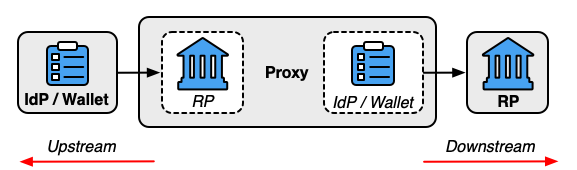
The role of the proxy is limited to the federation protocol. It is not involved in the establishment or facilitation of a trust agreement between the upstream IdP and downstream RP. The same party can operate a federation authority and a proxy to facilitate federation transactions, but the proxy function is separate from the federation authority’s role in managing the trust agreement. Just like other members of a federation system, the proxy can be involved in separate trust agreements with each of the upstream and downstream components, or a single trust agreement can apply to all parties, such as in a multilateral agreement.
The downstream RP receives and validates the assertion generated by the proxy, as it would an assertion from any other IdP. This assertion is based on the assertion that the proxy receives from the upstream IdP. The contents of the assertion from the upstream IdP can be handled in several ways, depending on the method used by the proxy:
The federated identifier (see Sec. 3.4) of an assertion from a proxy SHALL indicate the proxy as the issuer of the assertion.
A proxied federation model can provide several benefits. Federation proxies can simplify technical integration between the RP and IdP by providing a common interface for integration, as well as providing translation between federation protocols, formats, and schemas. Additionally, to the extent that a proxy effectively blinds the RP and IdP from each other, it can provide some business confidentiality for organizations that want to guard their subscriber lists from each other. Proxies can also mitigate some of the privacy risks described in Sec. 3.10, though other risks arise from their use since an additional party is now involved in handling subscriber information. For example, if an attacker is able to compromise the proxy, the attacker need not target the IdP or RP directly in order to gain access to subscriber attributes or activity since all of that information flows through the proxy. Additionally, the proxy can perform additional profiling (i.e., aggregating information on which identity the subscriber uses at which RPs) of the subscriber beyond what the IdP and RP can do, since the proxy brokers the federation transactions between the parties and binds the subscriber account to either side of the connection.
See Sec. 7.5 for further information on blinding techniques, their uses, and their limitations.
The FAL of the connection between the proxy and the downstream RP is considered to be the lowest FAL along the entire path, and the proxy SHALL accurately represent this to the downstream RP. For example, if the connection between the upstream IdP and the proxy is FAL1 and the connection between the proxy and the downstream RP otherwise meets the requirements of FAL2, the connection between the proxy and the downstream RP is still considered FAL1. Likewise, if the connection between the upstream IdP and the proxy is FAL2 and the connection between the proxy and the downstream RP is only FAL1, the overall connection through the proxy is considered FAL1.
A subscriber-controlled wallet could potentially function as a proxy. To do so, wallet software would need to act as an RP to an external IdP, just as any other proxy, and then provide those attributes to the downstream RP.
In some systems, the proxy is referred to as a broker.
The roles in a federation transaction can be connected in a variety of ways, but several common patterns are anticipated by these guidelines. The expected trust agreement structure and connection between components will vary based on which pattern is in use.
Different roles and functions can be fulfilled by separate parties that integrate with each other. For example, a CSP can provide attributes of the subscriber account to an IdP that is not operated by the same party or organization as the CSP.
It is also possible for a single party to fulfill multiple roles within a given federation agreement. For example, if the CSP provides the IdP as part of its identity services, the CSP can provision the subscriber accounts at the IdP as part of the subscriber account establishment process. Similarly, the RP can also be in the same security and administrative domain as the IdP but still use federation technology to connect for technical, deployment, and account management benefits.
The same is true for other functions in the overall federation system, such as a federation authority and proxy. While the roles may seem similar, they are fundamentally distinct and do not need to be connected. A federation authority facilitates the establishment of a trust agreement between parties, and a proxy facilitates the connection of the federation protocol. The same entity can fulfill both the federation authority and proxy functions in the system, providing a means of establishing both trust agreements and technical connections between IdPs and RPs.
The subscriber is identified in the federation transaction by information in the assertion, which allows the RP to associate the assertion with an RP subscriber account. This identification can happen through an account resolution process (see Sec. 3.8.2) or through a federated identifier.
For general purpose IdPs, a federated identifier is the logical combination of a subject identifier that represents a subscriber account and an issuer identifier that represents the IdP. The subject identifier is assigned by the IdP, and the issuer identifier is usually assigned to the IdP through configuration.
For subscriber-controlled wallets, a federated identifier is the logical combination of a subscriber identifier that represents the subscriber account and an issuer identifier that represents the CSP that issued the attribute bundle. The subject identifier is assigned by the CSP, and the issuer identifier is usually assigned to the CSP through configuration. However, these will not always be available, for example in the case of mobile driver’s licenses where the account resolution is typically done through the use of the driver’s license number and the issuer of the driver’s license. Such a pattern is addressed in Sec. 3.8.2.
The multi-part federated identifier pattern is required because different IdPs manage their subject identifiers independently, and could, therefore, potentially collide in their choices of subject identifiers for different subjects. Therefore, it is imperative that an RP never process the subject identifier without accounting for the IdP that issued the subject identifier. For most use cases, the federated identifier is stable for the subscriber across multiple sessions and independent of the authenticator used, allowing the RP to reliably identify the subscriber across multiple authenticated sessions and account changes. However, it is also possible for the federated identifier and its associated use at the RP to be ephemeral to provide some privacy enhancement. Federated identifiers and their constituent parts are intended to be machine-readable and not managed by or exposed to the subscriber, unlike a username or other human-facing identifier.
When federated identifiers are used, the federated identifier SHALL be unique to that subscriber. Federated identifiers SHALL be associated with a single subscriber at the RP.
It is recommended that federated identifiers contain no plaintext personal information, such as usernames, email addresses, employee numbers. This restriction is a requirement at FAL2 and above. When a federation process uses account resolution (see Sec. 3.8.2), the RP subscriber account can be resolved by the RP without the use of a federated identifier.
Federated identifiers are a logical concept and will typically not be an explicit value distinct from the subject identifier and issuer identifier. Instead, federated identifiers comprise the information needed to ensure that a subscriber is uniquely distinguished and there are no collisions between subject identifiers provided by different IdPs.
In some circumstances, it is desirable to prevent the subscriber account from being easily linked at multiple RPs through the use of a common subject identifier. A pairwise pseudonymous identifier (PPI) allows an IdP to provide multiple distinct federated identifiers to different RPs for a single subscriber account. The use of a PPI prevents different RPs from colluding to track the subscriber using the federated identifier.
When using pairwise pseudonymous identifiers within the assertions generated by the IdP for the RP, the IdP SHALL generate a different federated identifier for each RP (see Sec. 3.4.1.2) or set of RPs (see Sec. 3.4.1.3).
Some identity attributes such as names, physical addresses, phone numbers, email addresses, and others can be used to identify a subscriber outside of a federation transaction. When PPIs are used alongside these kinds of identifying attributes, it may still be possible for multiple colluding RPs to re-identify a subscriber by correlation across systems. For example, if two independent RPs each see the same subscriber identified with a different PPI, the RPs could still determine that the subscriber is the same person by comparing the name, email address, physical address, or other identifying attributes carried alongside the PPI in the respective assertions. If PPIs are used alongside identifying attributes, RPs SHALL establish privacy policies, processes, and procedures to prevent the correlation of subscriber data consistent with applicable legal and regulatory requirements.
In a proxied federation model (see Sec. 3.3.3), the upstream IdP may not be able to generate a PPI for the downstream RP, since the proxy could blind the IdP from knowing which RP is being accessed by the subscriber. In such situations, the PPI is generally established between the IdP and the federation proxy. Acting as an IdP, the proxy can provide a PPI to the downstream RP. Depending on the protocol, the federation proxy may need to map the PPI back to the associated identifiers from upstream IdPs in order to allow the identity protocol to function. In such cases, the proxy will be able to track and determine which PPIs represent the same subscriber at different RPs. The mapping of a PPI to other identifiers is considered subscriber information and SHALL be treated in accordance with the requirements in Sec. 3.10.1.
The PPI SHALL contain no identifying information about the subscriber (e.g., username, email address, employee number). The PPI SHALL be difficult to guess by a party with access to information about the subscriber and SHALL provide sufficient entropy as to be unguessable by an attacker. PPIs can be generated randomly and assigned to subscribers by the IdP or derived from other subscriber information if the derivation is done in an irreversible, unguessable manner (e.g., using a keyed hash function with a secret key, as discussed in [SP800-131A]).
Unless the PPI is designated as shared by the trust agreement, the PPI SHALL be disclosed to only a single RP.
The same shared PPI SHALL be used for a specific set of RPs if all of the following criteria are met:
The RPs SHALL conduct a privacy risk assessment to consider the privacy risks associated with requesting a shared PPI. See Sec. 7.2 for further privacy considerations.
The IdP SHALL ensure that only intended RPs are included in the set. Otherwise, a rogue RP could learn the shared PPI for a set of RPs by fraudulently posing as part of that set.
The sector identifier feature of [OIDC] provides a mechanism to calculate a shared PPI for a group of RPs. In this protocol, the identifiers of the RPs are all listed at a URL that can be fetched by the IdP over an authenticated protected channel. The shared PPI is calculated by considering the sector identifier URL along with other inputs to the algorithm such that all RPs listed in the sector identifier URL’s contents receive the same shared PPI.
Trust agreements are a construct that represent the set of trust relationships established to support parties in a federation transaction. A trust agreement SHALL address one or more of the following relationships:
All federation transactions SHALL be governed by the terms of one or more trust agreements between the applicable parties. Different relationships MAY be established at different times and by different processes. For example, a CSP and IdP entering into a trust agreement is generally separate from an RP and IdP entering into a trust agreement, but the overall set of terms for a federation transaction under these parties is drawn from both sets of relationships.
Different scenarios will require different combinations of trust in order to function, and these combinations can vary based on the federation model in use. The combination of individual trust agreements that are applicable to a federation transaction fulfills the requirements of these guidelines. Trust agreements can take different forms, including formal contractual agreements, informal dynamic user agreements, and other documented bilateral or multilateral trust decisions by the parties in the federation. In many cases, trust agreements can be implemented using a trust framework, which formalizes a set of rules for parties to connect with each other. Trust frameworks are often used by federation authorities to formalize the rules for the federation being managed by the federation authority.
For example, consider the case of subscriber-controlled wallets in which an RP might accept assertions without a direct or complete trust agreement with the CSP. As described in Sec. 5.3, provisions of the relevant trust agreements might be determined unilaterally by the RP through the evaluation of publicly available information about CSPs and their processes for issuing attribute bundles. The CSP does not need to know about the RP in order for this part of the trust relationship to be established. In order to fulfill the requirement to disclose the RP’s purpose for using attributes, the RP can disclose these purposes to the subscriber at runtime without informing the CSP.
Trust agreements establish the terms for federation transactions between the parties they affect, including the allowed xALs and the intended purposes of identity attributes exchanged in the federation transaction. The trust agreement SHALL establish customer experience requirements for the federation transaction, as discussed in Sec. 8. The trust agreement SHALL include details of the proofing process used at the CSP for subscribers covered by the trust agreement, including any compensating controls and exception handling processes.
All trust agreements SHALL define a specific population of subscriber accounts to which the agreement is applicable. The exact means of defining this population are out of scope for this document. In many cases, the population is defined as the full set of subscriber accounts that the CSP manages and makes available through an IdP. In other cases, the population is a demarcated subset of accounts that are available through an IdP. It is also possible for an RP to have a distinct trust agreement established with an IdP for a single subscriber account, such as in a subscriber-driven trust agreement.
During the course of a single federation transaction, it is important for the policies and expectations of all parties to be unambiguous. Therefore, there SHOULD only be one set of trust agreements in effect for a given transaction. This will usually be determined by the unique combination of CSP, IdP, and RP that are participating in the transaction. However, these agreements could vary in other ways, such as different populations of subscribers being governed by different trust agreements. If more than one trust agreement is applicable to a federation transaction, the combined set of terms of all applicable trust agreements SHALL constitute the effective trust agreement of that transaction.
The existence of a trust agreement between parties does not preclude the existence of other agreements for each party with other parties. For example, an IdP can have independent agreements with multiple RPs simultaneously, and an RP can likewise have independent agreements with multiple IdPs simultaneously. The IdP and RP need not disclose the existence or terms of trust agreements to parties outside of or not covered by the agreement in question.
Trust agreements SHALL establish terms regarding expected and acceptable IALs, AALs, and FALs in connection with the federated relationship.
Trust agreements SHALL define necessary mechanisms and materials to coordinate redress and issues between the different participants in the federation, as discussed in Sec. 3.5.3.
Trust agreements SHALL declare the data retention policies expected of all parties.
Even though subscribers are not generally directly involved in the trust agreement’s terms, subscribers are affected by the terms of the trust agreement and the resulting federation transactions. As such, the relevant terms of the trust agreement SHALL be made available to subscribers in clear and understandable language. The terms of the trust agreement SHALL be reviewed by all parties (e.g., the CSP, IdP, RP, or a federation authority) that are responsible for informing the subscriber of the terms of the trust agreement before the disclosure to the subscriber occurs in order to avoid revealing sensitive security information.
The means by which the subscriber can access these terms and the party responsible for informing the subscriber vary based on the means of establishing the trust agreement and the terms of the trust agreement itself. Common methods for disclosure include:
The establishment of a trust agreement is required for all federation transactions, even those for which the roles and applications exist within a single security domain or shared legal ownership, such as an enterprise system. In these cases, the establishment of the trust agreement can be an internal process and does not need to involve a formal agreement. Even in such cases, the organization must still document and disclose the terms of the trust agreement to the subscriber upon request.
The subscriber’s user agent is not usually party to the trust agreement, unless it is acting in one of the roles of the federation transaction (e.g., a subscriber-controlled wallet running in the subscriber’s browser software).
In a bilateral trust agreement, the establishment of the trust agreement occurs directly between the federated parties, and the trust agreement is not managed or facilitated by a separate party. Bilateral trust agreements allow for a point-to-point connection to be established between organizations that wish to provide federated identity access to services. Bilateral connections can take many forms, including large enterprise applications with static contracts or subscriber-driven dynamic connections to previously unknown RPs. In all cases, the CSP, IdP, and RP directly manage their policies regarding the federated connection.
Bilateral trust agreements conform to the stated requirements for all trust agreements. However, since these trust agreements do not involve additional parties, there are no additional normative requirements for their establishment and management, such as those mandated for multi-lateral trust agreements (see Sec. 3.5.2).
In a multilateral trust agreement, the federated parties look to a federation authority to assist in establishing the trust agreement between parties. In this model, the federation authority facilitates the inclusion of CSPs, IdPs, and RPs under the trust agreement.
When onboarding a party in any role, the federation authority conducts vetting on that party to verify its compliance with the terms of the trust agreement, as shown in Fig. 2. The level of vetting is unique to the use cases and models employed within the federation, and details are outside of the scope of this document. As with many other functions, the federation authority can outsource the vetting process to another party, but the federation authority is ultimately responsible for the results of the vetting process.
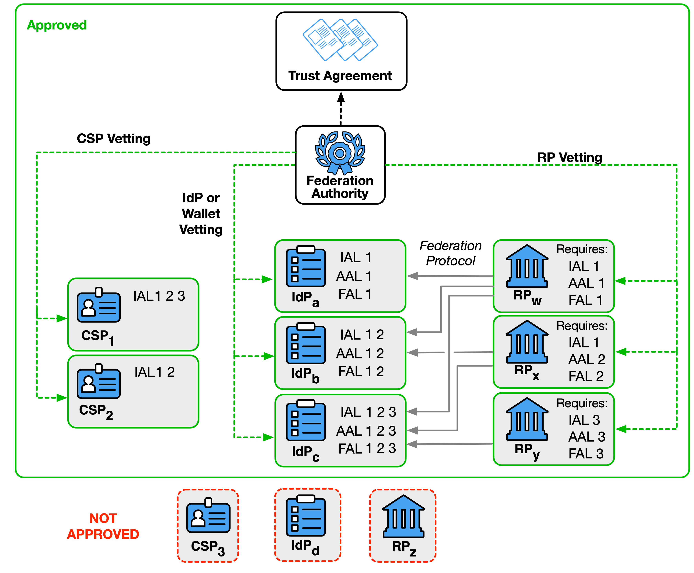
The trust agreement SHALL enumerate the required practices for vetting all parties and SHALL indicate the party or parties that are responsible for performing the vetting process.
At a minimum, the vetting of CSPs, IdPs, and RPs SHALL establish that:
The federation authority MAY provide a programmatic means for parties under the trust agreement to verify the membership of other parties in the trust agreement. For example, a federation authority could provide a discovery API that provides the vetted capabilities of an IdP for providing identities to RPs within the system. Alternatively, the federation authority could provide a signed attestation for RPs to present to IdPs during a registration step.
Federation authorities SHALL periodically reevaluate members for compliance with terms disclosed in the trust agreement.
A multilateral trust agreement MAY establish trust based on other trust agreements that are managed by other entities by creating an interfederation agreement. For example, IdP1 has been vetted under a multilateral agreement with federation authority A1, and RP2 has been vetted under a multilateral agreement with federation authority A2. In order to facilitate connection between IdP1 and RP2, a new federation authority A3 can provide a multilateral agreement that accepts IdPs from A1 and RPs from A2. If IdP1 and RP2 accept the authority of A3, the federation connection can continue under the auspices of this interfederation agreement.
Federation transactions occur between multiple parties that are often controlled by multiple entities, and different stages of the federation transaction can lead to situations in which a subscriber would need to seek redress from the other parties.
As the recipient of a subscriber’s identity attributes, the RP is the subscriber’s primary view into the federated system. In some instances, the subscriber may be unaware that an IdP is involved with their use of the RP. Therefore, it falls to the RP to provide the subscriber with a clear and accessible method of contacting the RP to request redress. For matters that involve the RP subscriber account (including any attributes stored in the account), RP functionality, bound authenticators, RP allowlists, and other items under the RP’s control, the RP SHALL provide a clear and accessible means of redress to the subscriber. For matters that involve the IdP or CSP, the RP SHALL provide the subscriber with a means of initiating the redress process with the IdP or CSP, as appropriate.
For matters that involve the use of the subscriber account in federation transactions, including attribute values and derived attribute values made available over federation transactions, IdP functionality, holder-of-key authenticators, IdP allowlists, and other items in the IdP’s control, the IdP SHALL provide a clear and accessible means of redress to the subscriber. For matters that also involve a particular RP, the IdP SHALL provide the subscriber with a means of initiating the redress process with the RP. For matters that involve a subscriber account that has been made available to the IdP, the IdP SHALL provide the subscriber with a means of initiating the redress process with the CSP.
For matters that involve the subscriber account, including identity attributes and authenticators in the subscriber account, the CSP SHALL provide the subscriber with a clear and accessible means of redress.
See Sec. 3.6 of [SP800-63] for more requirements on providing redress.
While a trust agreement establishes permission to federate, it does not facilitate the secure connection of parties in the federation. In order to communicate over a federation protocol, the CSP, IdP, and RP need to be able to identify each other in a secure fashion with the ability to associate identifiers with cryptographic keys and related security artifacts. In this way, an RP can ensure that an assertion is coming from the intended IdP or that an attribute bundle is coming from the intended CSP. Likewise, an IdP can ensure that it is sending an assertion to the intended RP.
The process of an RP establishing identifiers and cryptographic keys for an IdP or CSP is known as discovery. The process of an IdP establishing identifiers and cryptographic keys for the RP is known as registration. Both the discovery and registration processes can happen prior to any federation transaction or inline as part of the transaction itself. Additionally, both the discovery and registration processes can happen directly between parties or be facilitated through the use of a third-party service, as defined in the trust agreement. These processes can use a combination of manual distribution of keys and identifiers between the IdP, CSP, and RP or associate these entities with sources in which cryptographic key material and metadata can be fetched through automated processes. Different federation protocols and processes have different processes for establishing these identifiers and cryptographic keys, but the end result is that each party can properly identify others as necessary within the protocol.
The discovery and registration processes SHALL be established in a secure fashion, as defined by the trust agreement that governs the federation transaction. In many cases, the identifier is associated with a trusted source of cryptographic key material and not the key material itself. For example, a URL hosted by an IdP can serve the public signing keys for that IdP. Even if the RP is manually configured with this association, the RP can fetch the actual cryptographic key material at runtime. Protocols that require the transfer of cryptographic key information SHALL use an authenticated protected channel to exchange the cryptographic key information needed to operate the federated relationship, including any shared secrets or public keys. Any symmetric keys used in this relationship SHALL be unique to a pair of federation participants.
CSPs, IdPs (including subscriber-controlled wallets), and RPs MAY have multiple identifiers and cryptographic keys to serve different purposes within a trust agreement or different trust agreements. For example, an IdP could use one set of assertion signing keys for all FAL1 and FAL2 transactions and use a separately managed set of signing keys for FAL3 transactions that are stored in a higher security container.
When domain names, URIs, or other structured identifiers are used to identify parties, wildcards SHALL NOT be used. For example, if an RP is deployed at “www.example.com”, “service.example.com”, and “gateway.example.com”, then each of these identifiers would have to be registered for the RP. A wildcard of “*.example.com” cannot be used, as it would unintentionally allow access to “user.example.com” and “unknown.example.com” under the same RP identifier.
Over time, it can be desirable or necessary to update the cryptographic key associated with a CSP, IdP, or RP. The allowable update process for any identifiers and cryptographic keys SHALL be defined by the trust agreement and SHALL be executed using an authenticated protected channel, as in the initial cryptographic key establishment.
For example, if the IdP is identified by a URL, the IdP could publish its current public key set at a location underneath that URL. The IdP can update which keys are published at that location as needed. RPs can then fetch the public key from the known location as needed and obtain updated public keys as they are made available.
CSPs, IdPs (including subscriber-controlled wallets), and RPs SHALL store all signing keys, decryption keys, and symmetric keys in a secure fashion. Cryptographic key storage is subject to applicable [FIPS140] requirements, including applicable tamper resistance requirements.
Some circumstances require the cryptographic keys to be stored in a non-exportable manner, such as reaching FAL3 with a subscriber-controlled wallet on a subscriber’s device (see Sec. 5.4.1). To be considered non-exportable, key storage SHALL either be a separate piece of hardware or an embedded processor or execution environment, such as a secure element, trusted execution environment (TEE), or trusted platform module (TPM). These hardware modules or embedded processors are separate from a host processor, such as the CPU on a laptop or mobile device. Non-exportable key storage SHALL be designed to prohibit the export of the secret keys to the host processor and SHALL NOT be capable of being reprogrammed by the host processor to allow the secret keys to be extracted.
Software and device attestations can augment the establishment of identifiers and cryptographic keys, especially in dynamic and distributed systems. Attestations in this usage are cryptographically bound statements that a particular piece of software, device, or runtime system meets a set of agreed-upon parameters. The attestation is presented by the software in the context of establishing the identity of the software, device, or system with which the receiver is interacting. The attestation allows the receiver to verify the request with a higher degree of certainty than they would be able to otherwise.
For example, a specific distribution of subscriber-controlled wallet software can be signed by its distributor to allow RPs to recognize individual instances of that software. Alternatively, an RP could be issued an attestation from a federation authority to allow IdPs to recognize the RP as part of the federation.
When attestations are required by the trust agreement or requested as part of the federation protocol, received attestations SHALL be validated by the receiver.
See [RFC7591] Sec. 2.3 for more information about software statements, which are a means for OAuth and OpenID Connect RPs to communicate a signed set of software attributes during dynamic client registration.
Once the IdP and RP have entered into a trust agreement and completed registration, the federation protocol can be used to pass subscriber attributes from the IdP to the RP.
A subscriber’s identity attributes SHALL only be transmitted between the IdP and the RP for federation transactions or support functions, such as identification of compromised subscriber accounts (see Sec. 3.10.1), even when parties are allowlisted for federation purposes.
A subscriber’s identity attributes SHALL NOT be used by the RP for purposes other than those stipulated in the trust agreement unless the subscriber specifically consents to such purposes. A subscriber’s attributes SHALL be stored and managed in accordance with Sec. 3.11.3.
The subscriber SHALL be informed of the transmission of attributes to an RP. If the authorized party is the organization, the organization SHALL make the list of approved RPs and the associated sets of attributes sent to those RPs available to the subscriber. If the authorized party is the subscriber, the subscriber SHALL be prompted prior to the release of attributes using a runtime decision at the IdP, as described in Sec. 4.6.1.3.
An RP typically keeps a record known as the RP subscriber account to locally represent a subscriber. The RP subscriber account can contain things like access rights at the RP as well as a cache of identity attributes for the subscriber. The RP subscriber account has a separate life cycle from any subscriber account on which it might be based (e.g., the subscriber accounts maintained by a CSP or IdP).
An RP subscriber account is provisioned when the RP has associated a set of attributes about the subscriber with a data record that represents the subscriber account at the RP. The provisioning can happen prior to authentication or as a result of the federated authentication process, depending on the deployment patterns (see Sec. 4.6.3). The RP subscriber account MAY be associated with one or more federated identifiers at the time of provisioning or MAY be later linked to federated identifiers through account resolution, as discussed in Sec. 3.8.2.
An RP subscriber account is available for federated authentication when it is bound to one or more federated identifiers from the RP’s trusted IdPs, or an account resolution process is established. The successful authentication of a subscriber through a federation protocol allows the subscriber to access the information and functionality of the RP protected by the RP subscriber account.
An RP subscriber account is terminated when the RP removes all access to the account at the RP. Termination SHALL include the removal of all federated identifiers, bound authenticators, attributes, and identity information associated with the account, in accordance with Sec. 3.11.3. An RP MAY terminate an RP subscriber account independently from the IdP, regardless of the current validity of the subscriber account from which it is derived.
An RP subscriber account is disabled when the subscriber cannot access the RP using the account, such as when all federated identifiers and alternate authenticators are removed from the RP subscriber account, but the information in the account is retained. An RP could choose to disable an RP subscriber account rather than terminate it in order to facilitate records retention or investigate suspicious behavior associated with the account.
An RP MAY offer a means of recovery of an RP subscriber account with no current means of access.
An RP subscriber account can be provisioned at the RP without an authenticated session, but an authenticated session can only be created based on a provisioned account. See Sec. 3.9 for more information on sessions.
The RP SHALL document the practices and policies that it enacts when an RP subscriber account reaches a state of having zero associated federated identifiers; no means of access, including alternative authenticators (see Sec. 3.8.3); and no means of recovery, including account linking (see Sec. 3.8.1) and account resolution (see Sec. 3.8.2). In such cases, the RP subscriber account SHOULD be disabled or terminated.
The RP SHALL provide a notice to the subscriber when:
The RP SHOULD provide a notice to the subscriber when the RP subscriber account is disabled or terminated. The RP SHALL consider the reason for termination when determining whether to send a notice to the subscriber, as discussed in Sec. 5.4 of [SP800-63A].
For additional considerations on providing a notice to a subscriber about account management events, see Sec. 4.6 of [SP800-63B].
A single RP subscriber account MAY be associated with more than one federated identifier. This practice is sometimes known as account linking. If the RP allows a subscriber to link multiple subscriber accounts in this way, the RP SHALL require an authenticated session with the subscriber account for all linking functions. This authenticated session SHOULD require authentication using one existing federated identifier before linking the new federated identifier to the RP subscriber account.
When a federated identifier is removed from an RP subscriber account, the RP SHALL disallow access to the RP subscriber account from the removed federated identifier.
The RP MAY associate different access rights with the same account, depending on which federated account is used to access the RP. The means by which an RP determines authorization and access is out of scope for these guidelines.
If the RP has access to existing information about a set of subscribers, and this information is not associated with a federated identifier, the RP performs a process known as account resolution to determine which set of subscriber information to associate with a new RP subscriber account.
An RP that performs account resolution SHALL ensure that the attributes requested from the IdP are sufficient to uniquely resolve the subscriber within the RP’s system before linking the federated identifier with the RP subscriber account and granting access. The intended use of each attribute by the RP is detailed in the trust agreement, including whether the attribute is used for account resolution in this manner.
An RP that performs account resolution SHALL design the process such that it does not associate an RP subscriber account’s information with a federated identifier that does not belong to the subscriber.
For example, a subscriber-controlled wallet might not provide an RP with a federated identifier but could allow the RP to conduct account resolution by providing the RP an attribute bundle from the CSP that allows the RP to uniquely resolve the subscriber to an RP subscriber account. Alternatively, an RP using a pre-provisioning model could uniquely associate an incoming assertion to an RP subscriber account based on an agreed-upon set of attributes.
A similar account resolution process is also used when the RP verifies an authenticator used in a holder-of-key assertion for the first time. In this case, the RP SHALL ensure that the attributes carried with the authenticator uniquely resolve to the RP subscriber account before accepting the authenticator.
The RP MAY allow a subscriber to access their RP subscriber account using direct authentication processes by allowing the subscriber to add and remove authenticators in the RP subscriber account. The RP SHALL follow the requirements in [SP800-63B] to manage all alternative authenticators.
Since the RP is using the direct authentication model discussed in [SP800-63], there is no federation transaction and therefore no FAL assigned.
If the RP allows this kind of access, the RP SHOULD disclose the following in the trust agreement to allow IdPs to make decisions regarding information shared with the RP:
For additional considerations on providing notice to a subscriber about authenticator management events, see Sec. 4.6 of [SP800-63B].
While it is possible for bound authenticators (see Sec. 3.16) to be used as an alternative authenticator for direct access to the RP, these uses are distinct from each other and an RP SHALL determine whether a given authenticator can be used in one or both scenarios.
The ultimate goal of a federation transaction is to create an authenticated session between the subscriber and the RP that is backed by a verified assertion from the IdP. This authenticated session can be used for allowing the subscriber access to functions at the RP (i.e., logging in), identifying the subscriber to the RP, or processing attributes about the subscriber carried in the federation transaction. An authenticated session SHALL be created by the RP only when the following conditions are true:
When federation is used as part of an identification process, an RP subscriber account may not be established until other processes have been completed.
If the assertion is a holder-of-key assertion at FAL3, the authenticator indicated in the assertion SHALL be verified before the RP subscriber account is associated with an authenticated session, as discussed in Sec. 3.15. If the assertion also requires authentication with a bound authenticator at FAL3, a bound authenticator SHALL be verified before the RP subscriber account is associated with an authenticated session, as discussed in Sec. 3.16.
The authenticated session MAY be ended by the RP at any time.
See [SP800-63B] Sec. 5 for more information about session management requirements for both IdPs and RPs. For additional session requirements with general purpose IdPs, see Sec. 4.7.
The goal of a subscriber is to interact with and use the RP. Federation involves the transfer of personal attributes from the IdP, a party that is not involved during direct authentication to an RP. Federation also potentially gives the IdP broad visibility into a subscriber’s activities and status. Accordingly, there are specific privacy requirements associated with federation that do not exist in direct authentication.
When the RP requests a federation transaction from the IdP, this request and the subsequent processing of the federation transaction reveal to the IdP where the subscriber is logging in. Over time, the IdP could build a profile of subscriber transactions based on the knowledge of which RPs a given subscriber is using. This aggregation could enable new opportunities for subscriber tracking and the use of subscriber identity information in ways that do not align with subscribers’ privacy interests.
If the same subscriber account is asserted to multiple RPs, and those RPs communicate with each other, the colluding RPs could track a subscriber’s activity across multiple applications and security domains. The IdP SHOULD employ technical measures (e.g., the use of pairwise pseudonymous identifiers described in Sec. 3.4.1, privacy-enhancing cryptographic protocols) to provide disassociability and discourage subscriber activity tracking and profiling between RPs. When determining such measures, the IdP SHOULD apply relevant guidelines and standards, such as the NIST Privacy Framework [NIST-Privacy].
The following requirements apply specifically to federal agencies that act as an IdP, an RP, or both:
The agency SHALL consult with their Senior Agency Official for Privacy (SAOP) to conduct an analysis that determines whether the requirements of the Privacy Act are triggered by the agency that is acting as an IdP, by the agency that is acting as an RP, or both (see Sec. 7.4).
The agency SHALL publish or identify coverage by a System of Records Notice (SORN), as applicable.
The agency SHALL consult with their SAOP to conduct an analysis that determines whether the requirements of the E-Government Act are triggered by the agency that is acting as an IdP, the agency that is acting as an RP, or both.
The agency SHALL publish or identify coverage by a Privacy Impact Assessment (PIA), as applicable.
The agency SHALL conduct a privacy risk assessment regarding the sharing of subscriber identity information between the IdP and RP.
If the RP subscriber account life cycle process gives the RP access to attributes through a provisioning API (see Sec. 4.6.3), additional privacy measures SHALL be implemented to account for the difference in the RP subscriber account life cycle (e.g., separation of non-active subscriber accounts, proactive removal of disabled and terminated accounts). The IdP SHALL minimize the attributes that are made available to the RP through the provisioning API. The IdP SHALL limit the population of subscriber accounts that are available via the provisioning API to the population of subscribers authorized to use the RP by the trust agreement. To prevent RP retention of identity attributes for accounts that have been terminated at the IdP, the IdP SHALL use the provisioning API to de-provision RP subscriber accounts for terminated subscriber accounts except where restricted by RP data retention requirements, policies, or regulation. This measure helps enforce data minimization principles (see the example in Sec. 9.5). When an RP subscriber account is linked to multiple federated identifiers (see Sec. 3.8.1), the de-provisioning process could result in the RP subscriber account still existing at the RP but linked to a different federated identifier.
The IdP and RP SHALL exchange only the minimum data necessary to achieve the function of the system.
To increase subscriber control over the release of their identity attributes, trust agreements SHOULD use a runtime decision to control attribute release, as discussed in Sec. 4.6.1.3.
When the federation transaction uses an ephemeral provisioning mechanism (see Sec. 4.6.3), the IdP SHOULD use an ephemeral federated identifier for each authorization request to the RP to prevent the RP from storing or correlating information between sessions.
The IdP SHALL limit the transmission of subscriber information to only that which is necessary for the system to function and is stipulated and disclosed by the trust agreement. These functions include the following:
If an IdP discloses information on subscriber activities at an RP to any party or processes the subscriber’s attributes for any purpose other than these cases, the IdP SHALL implement measures to maintain predictability and manageability commensurate with the privacy risks that arise from the additional processing. Measures MAY include providing clear notice, obtaining subscriber consent, or enabling the selective use or disclosure of attributes. When an IdP gathers the subscriber’s consent to use information outside the identity transaction, the IdP SHALL NOT make consent for the additional processing a condition of the identity service. For example, an IdP cannot require a subscriber to consent to receiving a newsletter in order to allow the subscriber to log into an RP.
An RP SHALL limit the transmission of subscriber activities to the associated IdP to the following cases and only if stipulated and disclosed by the trust agreement:
If an RP uses the subscriber’s identity information for any purpose other than those stipulated in the trust agreement, the RP SHALL inform the subscriber and obtain their consent for such additional uses.
Subscriber information could also be transmitted to comply with laws or legal processes, regardless of the terms of the trust agreement.
See [NISTIR8062] for additional information on privacy engineering and risk management.
In some larger federation systems, particularly multilateral federations managed by federation authorities, there can be multiple CSPs involved in the same trust agreement. In such cases, it could be desirable for CSPs to share information with each other for activities, such as fraud mitigation (e.g., to prevent an attacker from jumping between CSPs with different accounts to avoid detection). While sharing information in this way can be used to mitigate fraud, there are also substantial privacy concerns as the CSPs could learn subscriber attributes and actions from each other that were not originally disclosed to all CSPs that the subscriber uses.
Similar information sharing could be desirable between IdPs that may operate independently from the CSP, such as between subscriber-controlled wallets that are hosted on remote systems, and such sharing has similar privacy considerations.
All information transmissions between CSPs and/or IdPs SHALL be subject to the limitations for IdPs enumerated in Sec. 3.10.1. Any such information sharing between CSPs and/or IdPs SHALL be included in their privacy risk assessments.
The terms of the trust agreement that connects CSPs SHALL define the policies that apply for the transfer of information shared between CSPs. In a trust agreement managed by a federation authority, the federation authority defines these terms.
IdPs and CSPs SHALL employ appropriately tailored security controls from at least the moderate baseline security controls defined in [SP800-53] or an equivalent federal (e.g., [FEDRAMP]) or industry standard that the organization has determined for the information systems, applications, and online services that these guidelines are used to protect. RPs SHALL employ appropriately tailored security controls from at least the low baseline security controls defined in [SP800-53] or an equivalent federal (e.g., [FEDRAMP]) or industry standard that the organization has determined for the information systems, applications, and online services that these guidelines are used to protect. RPs that request or process personal information SHALL employ appropriately tailored security controls from at least the moderate baseline security controls defined in [SP800-53] or an equivalent federal (e.g., [FEDRAMP]) or industry standard. CSPs, IdPs, and RPs SHALL ensure that the minimum assurance-related controls for the appropriate systems or equivalent are satisfied or exceeded.
An assertion injection attack in the context of a federated protocol consists of an attacker attempting to force an RP to accept or process an assertion or assertion reference in order to gain access to the RP or deny a legitimate subscriber access to the RP. The attacker does this by taking an assertion or assertion reference and injecting it into a vulnerable RP. A successful attacker can trick an RP into binding the attacker’s session to the federated identifier in the assertion. The attacker’s assertion could be either stolen from a legitimate subscriber or manufactured to perpetrate the attack.
Protection from assertion injection attacks is recommended at all FALs and required at FAL2 and above. In all cases, the RP needs to take reasonable steps to prevent an attacker from presenting an injected assertion or assertion reference based on the nature of the RP software, the capabilities of the federation protocol in use, and the needs of the overall system. Both [OIDC] and [SAML] provide mechanisms for assertion injection protection, including nonces sent from the RP during the request, RP authentication for back-channel communications, and methods for the RP to start the federation transaction and track its state throughout the process. Different mechanisms provide different degrees of protection and are applicable in different circumstances. While the details of specific protections will vary based on the federation protocol and technology in use, common best practices can be used to limit the attack surface, such as:
Assertion injection attacks are particularly dangerous when combined with phishing attacks because the attacker can either trick the subscriber into generating a valid assertion for the attacker to inject into the attacker’s session, or the attacker can trick the subscriber into injecting the attacker’s assertion into the subscriber’s session at the RP.
Communications between the IdP and the RP SHALL be protected in transit using an authenticated protected channel. Communications between the subscriber and either the IdP or the RP (usually through a user agent) SHALL be made using an authenticated protected channel.
The IdP may have access to information that may be useful to the RP in enforcing security policies, such as device identity, location, system health checks, and configuration management. The IdP MAY disclose this information to the RP within the bounds of the trust agreement and subject to the subscriber’s notice and consent, as described in Sec. 7.2.
Identity attributes MAY be included outside of the assertion itself by authorizing access to an identity API, as discussed in Sec. 3.12.3. Splitting identity information in this manner can help protect subscriber privacy and can allow for the limited disclosure of personal information in addition to the essential information in the authentication assertion itself. The use of identity APIs SHALL be enumerated in the terms of the trust agreement.
When derived attribute values are available and fulfill the RP’s needs, the RP SHOULD request derived attribute values rather than full attribute values, as described in Sec. 7.3. The IdP SHOULD support derived attribute values to the extent that the underlying federation protocol allows.
Whether the account is active or not, the IdP and RP SHALL store personal information in a subscriber account or RP subscriber account using tailored security controls defined in [SP800-53] or an equivalent federal (e.g., [FEDRAMP]) or industry standard.
When an RP subscriber account can no longer be accessed by a subscriber (e.g., when there are no federated identifiers associated with the account and no alternate means of authentication), the RP SHOULD terminate the RP subscriber account. In particular, if an RP supports account linking (see Sec. 3.8.1) or alternative authenticators (see Sec. 3.8.3), the RP MAY choose to not terminate the RP subscriber account and instead disable the account and retain necessary information in it.
The IdP and RP SHOULD support the deletion of personal information in the subscriber account and RP subscriber account upon account termination, except when otherwise restricted by regulations, laws, or policies or when the risk of an application deems it essential to retain the subscriber’s information. IdPs and RPs that do not support deletion SHALL provide a statutory or risk-based justification and document it in the trust agreement. For example, the RP could record the federated identifier in access and audit logs that are retained even after the account has been terminated. However, all identity attributes and personal information are removed from the RP’s own storage as the RP no longer needs them for its functions.
When the RP subscriber account is terminated, the RP SHALL remove all subscriber attributes from storage, except when otherwise restricted by regulations, laws, or policies or when the risk of an application deems it essential.
Identity attributes that represent the subscriber are sent to the RP during a federation transaction. These attributes take on multiple aspects that can be combined in different ways.
\clearpage
Trust agreements SHALL point to the CSP’s practice statements that describe the processes and sources used for attribute validation.
Other protocols and specifications often refer to attribute bundles as credentials. However, this term would be in conflict with its use within these guidelines for a different concept. Consequently, these guidelines use the term “attribute bundle” instead.
As an alternative to sending attributes directly from the IdP in an assertion or identity API, attribute values and derived attribute values can be collected into bundles that are signed by the CSP. These attribute bundles can be verified by the RP using the cryptographic protections of the attribute bundle, independently of protections provided by the IdP. Attribute bundles are commonly used by subscriber-controlled wallets. Some examples of technologies used to bundle attributes are Selective Disclosure JSON Web Tokens [SD-JWT], the Verifiable Credentials Data Model defined in [VC], and the mDoc Mobile Security Object defined in [ISOIEC18013-5].
The presentation of an attribute bundle SHALL be protected by the IdP in the same manner as non-bundled attributes. That is, attribute bundles that are presented in an assertion are covered by the signature of the assertion, and attribute bundles that are made available by an identity API are protected by the limited access controls to that API.
Attribute bundles include one or more attribute values and derived attribute values along with an identifier for the issuing CSP. One of these attribute values could function as a subscriber identifier if the issuing CSP ensures the uniqueness of this value across its subscribers. Since attribute bundles are carried in the assertion from the IdP, the subscriber attributes within the bundle do not need to be fully disclosed to all RPs on every transaction and can instead be selectively disclosed to the RP. An attribute bundle using selective disclosure technology can increase the privacy of a system by limiting which attributes an RP can read from the attribute bundle without needing a new bundle to be issued to the IdP. The RP can still verify the signature of the attribute bundle as a whole and confirm the bundle’s source as the CSP without the IdP having to disclose all of the contents of the attribute bundle to the RP.
The RP SHALL validate the signature specific to the attribute bundle as well as any container signatures, such as the signature of the assertion as a whole.
An attribute bundle MAY optionally include a verification key for the IdP to which the bundle has been issued. In such cases, the RP SHALL confirm that the assertion is presented by the identity claimed in the attribute bundle by verifying the signature over the assertion using the IdP’s verification key in the signed attribute bundle.
For some use cases, knowing the actual value of an identity attribute is not strictly necessary for the RP to function, and a value derived from the identity attribute is sufficient. For example, if the RP needs to know whether the subscriber is above the age of majority, the RP could request the subscriber’s birth date and calculate the majority age question from this value. However, doing so reveals more specific information to the RP than is truly needed for the RP’s functional requirements. Instead, the IdP could calculate whether the subscriber’s age meets the definitions for majority at the time of the RP’s request and return a simple boolean for this derivation instead of the birth date value itself. The RP can then continue its processing without needing to see the underlying value.
Derived attribute values increase the privacy of a system since they allow a more focused release of information to the RP. While some federation systems allow the RP to dynamically query for an arbitrary derived attribute value at request time, many common use cases can be accommodated by the IdP pre-calculating common derived attribute values and offering them as alternatives to the full attribute value. To preserve privacy, derived attribute values SHALL NOT disclose the underlying attribute value to a requester. Selective disclosure technology, as found in some attribute bundles, can be used to carry both full attribute values and derived attribute values in the same response, disclosing only that which is necessary for the application.
Derived attribute values are directly included in assertions (see Sec. 4.9 and Sec. 5.8) or included in attribute bundles (see Sec. 3.12.1).
Attributes about the subscriber, including profile information, MAY be provided to the RP through a protected API known as the identity API. The RP is granted limited access to the identity API during the federation transaction in concert with the assertion. For example, in OpenID Connect, the UserInfo Endpoint provides a standardized identity API for fetching attributes about the subscriber. This API is protected by an OAuth 2.0 Access Token, which is issued to the RP along with OpenID Connect’s assertion, the ID Token. Identity APIs SHOULD require sender-constrained access to ensure that identity information is only made available to authorized RPs.
By making attributes available at an identity API, the IdP no longer has to use the assertion to convey as much information to the RP. This not only means that sensitive attributes do not have to be carried in the assertion itself but also makes the assertion smaller and easier to process by the RP. The contents of the assertion can then be limited to essential fields (e.g., unique subject identifiers), information about the authentication event at the IdP, and information about the federation transaction.
Identity APIs also make it possible for the RP to help manage the transmission of subscriber attributes from the IdP. The RP often caches attributes that are provided by the IdP in an RP subscriber account (see Sec. 3.8), and the RP can record when these attributes were last received from the IdP. The RP can request subscriber attributes only when needed to update the RP subscriber account, instead of receiving them on every federation transaction in the assertion. The IdP can aid this decision by indicating in the assertion the time at which any of the subscriber attributes available to the RP were updated at the IdP. This approach is particularly helpful when a subscriber’s attributes are stable over time, allowing the RP to function without fetching them on every request.
All possible use of identity APIs, including which provisioning models are available through the API, SHALL be recorded and disclosed as part of the trust agreement. Access to the identity API SHALL be time-limited by the trust agreement. Access to the identity API SHOULD be limited to the duration of the federation transaction plus the time necessary to synchronize attributes, as discussed in Sec. 4.6.4. Since the time limitation is separate from the validity time window of the assertion and the lifetime of the authenticated session at the RP, access to an identity API by the RP without an associated valid assertion SHALL NOT be sufficient for the establishment of an authenticated session at the RP.
A given identity API deployment is expected to be capable of providing attributes for all subscribers for whom the IdP can create assertions. However, when access to the identity API is granted within the context of a federation transaction, the attributes provided by an identity API SHALL be associated with only the single subscriber identified in the associated assertion. If the identity API is hosted by the IdP, the returned attributes SHALL include the subject identifier for the subscriber. This allows the RP to positively correlate the assertion’s subject to the returned attributes. When access to an identity API is provided as part of pre-provisioning RP subscriber accounts (see Sec. 4.6.3), the RP is usually granted blanket access to the identity API outside of the context of the federation transaction, and these requirements do not apply. For pre-provisioning use cases, the privacy considerations SHALL be evaluated and recorded as part of the trust agreement. If the identity API is hosted externally from the IdP, the requirements in Sec. 3.12.3.1 apply.
While most identity APIs used in federation protocols are hosted as part of the IdP, it is also possible for the IdP to grant the RP access to external identity APIs that are hosted outside of the IdP. External identity APIs are normally provided by attribute providers other than the CSP and provide attributes about the subscriber in addition to those available from the subscriber account. When the IdP grants access to an external identity API, the information returned from the external identity API is associated with the subscriber just like an identity API hosted by the IdP. For the purposes of the trust agreement, the IdP is responsible for the association of the external identity API’s content with the subscriber account, even though the IdP does not have control of the data returned by the external identity API.
As the attributes returned by the external identity API are assumed to be independent of those returned directly from the IdP, the contents of the external Identity API MAY use different identifiers, formats, or schemas from those used by the IdP. In particular, an external identity API is not expected to use the same federated identifier as an IdP-hosted identity API. For example, an IdP could provide access to a subscriber’s medical license information. Instead of the IdP asserting the license status directly, the IdP provides the RP access to a record at a medical licensure agency that represents the subscriber. The federation protocol can enable this by allowing the IdP to provide a link to an API with the record that represents the subscriber as well as a credential that allows limited access to this API. The RP can then make a strong association between the subscriber and the medical license record, even though the license record will likely use a different identifier and would not otherwise be correlatable by the RP. The IdP remains responsible for providing this link to the RP.
Any use of external identity APIs for providing attributes SHALL be enumerated by the trust agreement as part of listing attribute sources.
Assertions SHALL include a set of protections to prevent attackers from manufacturing valid assertions or reusing captured assertions at different RPs. The required protections depend on the details of the use case being considered, and specific protections are listed in the following subsections.
Assertions SHALL be sufficiently unique to permit unique identification by the target RP. Assertions MAY accomplish this by using an embedded nonce, issuance timestamp, assertion identifier, or a combination of these or other techniques.
Assertions SHALL be cryptographically signed by the issuer (IdP). The RP SHALL validate the digital signature or MAC of each such assertion based on the issuer’s verification key. This signature SHALL cover the entire assertion, including its identifier, issuer, audience, subject, and time validity window.
The assertion signature SHALL either be a digital signature using asymmetric keys or a MAC using a symmetric key that is shared between the RP and issuer with approved cryptography.
The contents of the assertion can be encrypted to protect against exposing sensitive information to untrusted third parties, such as a user agent. This protection is especially relevant when the assertion contains personal information about the subscriber.
A trust agreement MAY require the encryption of assertion contents in other situations.
While most assertion formats support encryption of the entire assertion, some assertion formats allow for only the personal information portions of the assertion to be encrypted, providing the selective disclosure of sensitive information to the RP without encrypting the entire assertion. When portions of the assertion are encrypted, only an RP that holds the necessary decryption key will be able to access the encrypted information in the assertion.
When encrypting assertions, the IdP SHALL encrypt the contents of the assertion using the RP’s encryption key with approved cryptography. For example, a SAML assertion can be encrypted using XML-Encryption, while an OpenID Connect ID Token can be encrypted using JSON Web Encryption (JWE).
When used with back-channel presentation, an assertion can also be encrypted in transit with a mutually authenticated TLS connection if there are no intermediaries between the IdP and RP that interrupt the TLS channel.
The meaning of subject identifiers is contextual to their target systems, unlike other possible identifiers, such as SSNs, email addresses, or driver’s license numbers. Therefore, subject identifiers alone do not trigger encryption requirements based on protecting personal information.
Assertions SHALL use audience restriction techniques to allow an RP to recognize whether it is the intended target of an issued assertion. All RPs SHALL check that the audience of an assertion contains an identifier for their RP to prevent the assertion injection and replay of an assertion generated for one RP at another RP.
In order to limit the places that an assertion could successfully be replayed by an attacker, IdPs SHOULD issue assertions that are designated for only a single audience. Restriction to a single audience is required at FAL2 and above.
A bearer assertion can be presented on its own as proof of the identity of the party presenting it. No other proof beyond validation of the assertion is required. Similarly, a bearer assertion reference can be presented on its own to the RP and used by the RP to fetch an assertion. If an attacker can capture or manufacture a valid assertion or assertion reference that represents a subscriber and can successfully present that assertion or reference to the RP, then the attacker could impersonate the subscriber at that RP.
The mere possession of a bearer assertion or reference is not always enough to impersonate a subscriber. For example, if an assertion is presented in the back-channel federation model (see Sec. 4.11.1), additional controls can be placed on the transaction (e.g., identification of the RP, assertion injection protections) that help further protect the RP from fraudulent activity.
A holder-of-key assertion (Fig. 3) SHALL include a unique identifier for an authenticator that can be verified independently by the RP, such as the public key of a certificate controlled by the subscriber. The RP SHALL verify that the subscriber possesses the authenticator identified by the assertion. Holder-of-key assertions are most often used when the authenticator technology is tied to a public-key infrastructure (PKI) trusted by both the IdP and RP.
Fig. 3. Holder-of-key assertions
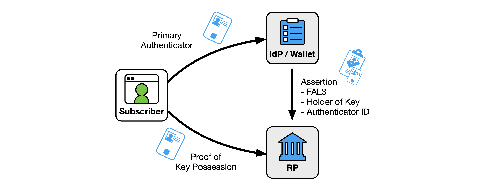
The authenticator identified in a holder-of-key assertion MAY be distinct from the primary authenticator that the subscriber uses to authenticate to the IdP. The authenticator identified in a holder-of-key assertion SHALL be phishing-resistant, as defined by Sec. 3.2.5 of [SP800-63B]. When the RP encounters an authenticator in a holder-of-key assertion for the first time, the RP SHALL ensure that the authenticator can be uniquely resolved to the RP subscriber account, as discussed in Sec. 3.8.2.
A holder-of-key assertion SHALL NOT include an unencrypted private key or symmetric key to be used as an authenticator.
Assertions from subscriber-controlled wallets that run on a subscriber’s device can be considered holder-of-key assertions.
Section 9.6 provides a more complete example of the use of a mutual TLS connection to provide the proof of possession of a certificate on a smart card that is listed by the assertion.
Since the authenticators used in holder-of-key assertions could be presented to multiple parties, and these authenticators often contain identity attributes, there are additional privacy considerations to address, as discussed in Sec. 7.
A bound authenticator (Fig. 4) is an authenticator that is bound to the RP subscriber account and managed by the RP. The IdP SHALL include an indicator in the assertion when the assertion is to be used with a bound authenticator at FAL3. The unique identifier for the authenticator (such as its public key) SHALL be stored in the RP subscriber account. The RP needs to have a reliable basis for evaluating the characteristics of the bound authenticator, such as the inclusion of a signed attestation, as discussed in Sec. 3.2.4 of [SP800-63B]. Bound authenticators are most often used when the authenticator technology is not tied to a PKI trusted by both the IdP and RP, for example when no such PKI exists.
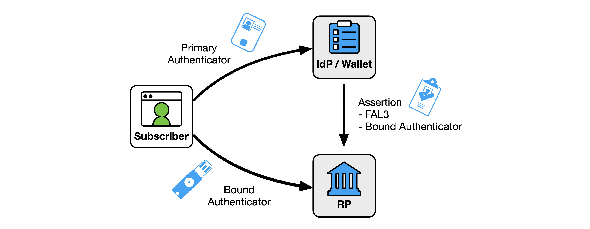
A bound authenticator SHALL be unique per subscriber at the RP such that two subscribers cannot present the same authenticator for their separate RP subscriber accounts. All bound authenticators SHALL use phishing-resistant authentication mechanisms, as defined by Sec. 3.2.5 of [SP800-63B]. Consequently, subscriber-chosen values such as a password cannot be used as bound authenticators. Bound authenticators SHALL be accepted for authentication in the context of processing an FAL3 assertion for a federated transaction. While it is possible for the same authenticator to also be used for direct authentication to the RP (see Sec. 3.8.3), such use is not considered a bound authenticator, and the RP SHALL document these as distinct use cases.
The IdP MAY specify types or characteristics for allowable bound authenticators in the trust agreement.
Before an RP can successfully accept an FAL3 assertion, the RP subscriber account SHALL include a reference to a bound authenticator that is to be verified during the FAL3 transaction. These authenticators can be provided by either the RP (as in Sec. 13.15.1) or the subscriber (as in Sec. 13.15.2), and different requirements apply to the initial binding of the authenticator to the RP subscriber account in each case.
The RP SHALL send a notification to the subscriber via an out-of-band mechanism (e.g., an email to an address previously associated with the subscriber) and SHOULD notify the IdP using a shared signaling system (see Sec. 4.8) if any of the following events occur:
For additional considerations on providing notice to a subscriber about authenticator management events, see Sec. 4.6 of [SP800-63B].
For RP-provided authenticators, the system administrator of the RP SHALL issue the authenticator directly to the subscriber for use with an FAL3 federation transaction. The system administrator of the RP SHALL use an independent means to determine whether the identified subject of the RP subscriber account is the party to which the authenticator is issued. The system administrator of the RP SHALL follow the initial authenticator binding requirements in Sec. 4 of [SP800-63A] or the post-enrollment binding requirements in Sec. 4.1.2 of [SP800-63B], as appropriate. The system administrator of the RP SHALL store a unique identifier for the bound authenticator in the RP subscriber account, such as the public key of the authenticator.
For example, consider an RP that has a collection of cryptographic authenticators that it has purchased for use with FAL3 authentication. These authenticators are each provisioned to a specific RP subscriber account but are held in a controlled environment by the system administrator of the RP. To issue the authenticator, the RP could use an in-person process in which the system administrator of the RP has the subscriber authenticate to an RP-controlled workstation using an FAL3 federation transaction from the IdP. The system administrator then hands the subscriber the bound authenticator indicated by the RP subscriber account and has them authenticate to the workstation using that. The subscriber is now in possession of a bound authenticator supplied by the RP, which can be used to reach FAL3 for future transactions. Alternatively, the system administrator of the RP could send the authenticator to a verified address for the subscriber and have the subscriber verify receipt through an activation process. Since the use of the bound authenticator still requires a valid assertion from the IdP, interception of the authenticator alone is not sufficient for accessing the RP subscriber account at FAL3.
The RP MAY provide a process for associating subscriber-provided authenticators to the RP subscriber account on a trust-on-first-use basis. This process is known as a binding ceremony and has additional requirements beyond a typical FAL3 federation process. The binding cermony is similar to the subscriber-provided authenticator binding process discussed in Sec. 4.1.3 of [SP800-63B].
If no bound authenticators are associated with the RP subscriber account, the RP SHALL perform a binding ceremony to establish the connection between the authenticator, the subscriber, and the RP subscriber account, as shown in Fig. 5. The RP SHALL first establish an authenticated session using federation with an assertion that meets all the other requirements of FAL3, including an indication that the assertion is intended for use at FAL3 with a bound authenticator (e.g., the assertion contains an authentication class reference or a Vectors of Trust [RFC8485] value indicating this). The subscriber SHALL immediately be prompted to present and authenticate with the proposed authenticator. Upon successful presentation of the authenticator, the RP SHALL store a unique identifier for the authenticator (such as its public key) and associate this with the RP subscriber account that is associated with the federated identifier. If the subscriber fails to successfully authenticate to the RP using an appropriate authenticator, the binding ceremony fails. The binding ceremony session SHALL have a timeout of five minutes or less and SHALL NOT be used as an authenticated session for any other purpose, as described in Sec. 3.9. Upon successful completion of the binding ceremony, the RP SHALL immediately request a new assertion from the IdP at FAL3. Upon receiving the new assertion, the RP SHALL prompt the subscriber for the newly bound authenticator and SHALL validate the authenticator output.
Fig. 5. Subscriber-provided bound authenticator binding ceremony
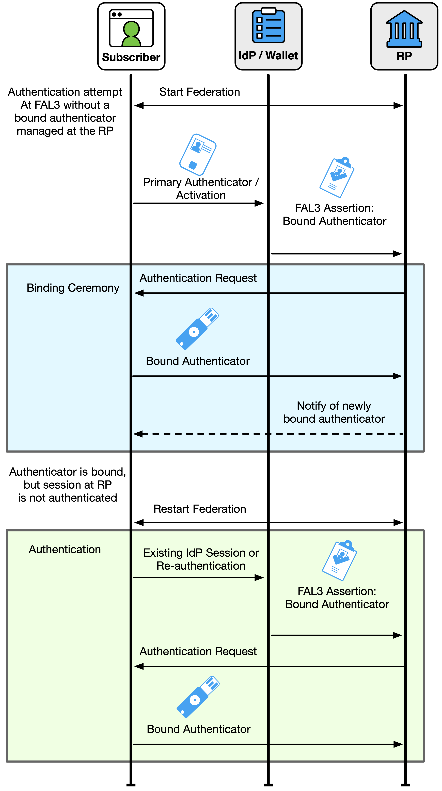
Subscriber-provided bound authenticators are particularly helpful when the subscriber already has access to an appropriate authenticator that the RP allows them to use for FAL3 transactions. For example, a subscriber could have a single-factor cryptographic authenticator that uses name-based phishing resistance, as described in Sec. 3.2.5.2 of [SP800-63B]. With such a device, the IdP and RP would see different verification keys when the authenticator is used in each location, meaning that the bound authenticator cannot be easily verified by the IdP. Furthermore, since the RP did not issue the authenticator, the RP does not know the authenticator’s verification key ahead of time, nor does it know which subscriber account to associate with the verification key. Instead, the RP can use a binding ceremony to allow the subscriber to use this device as a bound authenticator at FAL3. A more complete example is found in Sec. 9.7.
An RP MAY allow a subscriber to bind multiple subscriber-provided authenticators at FAL3. If this is the case, and the RP subscriber account has one or more existing bound authenticators, the binding ceremony makes use of one of the subscriber’s existing bound authenticators to reach FAL3. During the initial authentication step of the binding ceremony, the RP SHALL request authentication with an existing bound authenticator to reach FAL3. Once this authentication is complete and the binding ceremony session is established, the RP SHALL request authentication with the new authenticator and associate it with the RP subscriber account as a bound authenticator. The RP completes the binding ceremony by requesting a new assertion at FAL3.
In addition to an RP determining that a bound authenticator is no longer viable, a subscriber could choose to stop using a bound authenticator for a variety of reasons, such as the authenticator being lost, compromised, or no longer usable due to technology and platform changes. In such cases, an RP MAY allow a subscriber to remove a subscriber-provided bound authenticator from their RP subscriber account, thereby removing the ability to use that authenticator for FAL3 sessions. When a bound authenticator is removed, the RP SHALL terminate all current FAL3 sessions for the subscriber and SHALL require reauthentication of the subscriber from the IdP at FAL3. The RP SHALL NOT prompt the subscriber to authenticate with the authenticator being removed, since the subscriber will often not have access to the authenticator in question during the unbinding process, particularly if the authenticator is lost or compromised. If all bound authenticators are removed, the subscriber will no longer be able to reach FAL3 until a new bound authenticator is added to the RP subscriber account. This situation poses similar risks to account recovery at the RP.
When the RP receives an assertion that is associated with a bound authenticator, the subscriber proves possession of the bound authenticator directly to the RP. The primary authentication at the IdP and the federated authentication at the RP are processed separately. While the subscriber could use the same authenticator during the primary authentication at the IdP as the bound authenticator at the RP, there is no assumption that these will be the same.
The following requirements apply to all assertions that are associated with a bound authenticator:
This section is normative.
A general-purpose IdP is an IdP that the CSP uses to make the subscriber account available through a process of provisioning the IdP, as described in Sec. 4.1. The subscriber provides an authentication event to the IdP using one or more authenticators that are bound to the subscriber account, as described in Sec. 4.5. Usually, a general-purpose IdP is hosted on a remote service and not on the subscriber’s device. Often, a general-purpose IdP supports multiple subscribers.
In order to make subscriber accounts available through an IdP, the subscriber accounts need to be provisioned at the IdP. The means by which the subscriber account is provisioned to the IdP SHALL be disclosed in the trust agreement.
Due to the requirement for the IdP to be able to authenticate the subscriber, the IdP is often a service of the CSP and has some level of access to the attributes and authenticators in the subscriber account. Such IdPs are generally in the same security domain as the identity and access management system that houses the subscriber account.
In other cases, one or more authenticators in the subscriber account can be verified outside of the security domain, such as authenticators tied to a common PKI. In these cases, the IdP can pull subscriber attributes and account information from the authenticator to provide a federated login to RPs.
The IdP augments the subscriber account with federation-specific attributes, such as a federated identifier. The IdP can collect additional attributes for federation purposes subject to the privacy and storage requirements enumerated by the trust agreement.
The CSP can provide attributes from the subscriber account to the IdP as attribute values, derived attribute values, or attribute bundles. The CSP SHALL sign attribute bundles issued to the IdP.
After the subscriber account is provisioned to the IdP, the CSP is party to the trust agreement but is not directly involved in the federation transaction. Consequently, even if the RP fetches attributes through an identity API that is hosted by the CSP, the identity API is considered a function of the IdP and not the CSP for the purposes of these guidelines.
A federation transaction that involves a general-purpose IdP establishes the subscriber account at the IdP and culminates in an authenticated session for the subscriber at the RP. This process is shown in Fig. 6.
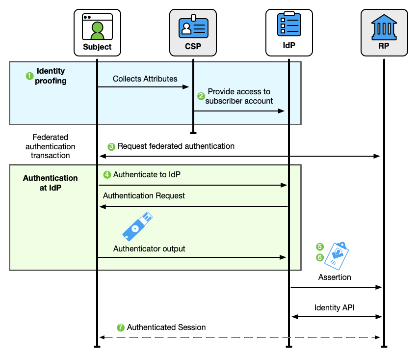
A federation transaction is a multi-stage process:
Before federation can occur, the subscriber account is established by the CSP. This account binds the identity attributes collected by the CSP to a set of authenticators used by the subscriber.
The subscriber account is provisioned at the IdP. The IdP augments the subscriber account with federation-specific attributes, such as a federated identifier.
The IdP and RP begin a federated authentication transaction to authenticate a subscriber to the RP.
The subscriber authenticates to the IdP using an authenticator that is bound to the subscriber account. If mandated by the trust agreement, the authorized party (often the subscriber) is prompted to approve the release of identity information at runtime.
The IdP creates an assertion to represent the results of the authentication event. The assertion is based on the terms established by the trust agreement, the request from the RP, the capabilities of the IdP, the subscriber account known to the IdP, and the attributes permitted by the authorized party.
The assertion is passed to the RP across the network.
The RP processes this assertion from the IdP and establishes an authenticated session with the subscriber. Optionally, the RP receives identity attributes from the IdP that represents the subscriber account, either in the assertion or through an identity API.
Federated transactions are enabled by trust agreements, as described in Sec. 3.5. These trust agreements define which parties are fulfilling which roles, the terms under which the parties operate with each other, permission for the systems in question to connect, and the terms under which the parties interact with each other. A single trust agreement often covers multiple federation transactions. The list of available subscriber identity attributes, derived attributes, and attribute bundles is established in the trust agreement, though the decision of which attributes are released to a given RP for a given transaction is finalized during the federation transaction itself. The final set of attributes, derived attribute values, and attribute bundles to be passed to the RP is selected by processing the following:
The IdP and RP also need to perform discovery and registration to establish the cryptographic keys and identifiers that are needed for information to be securely exchanged between the parties in the federation protocol (see Sec. 4.4). While there may be an existing policy decision that represents a permission to connect (through a pre-established trust agreement), this step entails a connection and integration at the technical level. At any FAL, this stage can occur before subscribers try to access the RP. At FAL1 or FAL2, this stage could alternatively occur in response to a subscriber’s attempt to use an IdP at an RP.
In a federated identity transaction, the IdP is the source of identity and authentication attributes for the RP. The normal flow of information for a federation transaction is from the IdP to the RP. Due to the directional nature of this information flow, the IdP is considered to be upstream of the RP and the RP is considered to be downstream of the IdP. It is also possible for additional information to flow back up from the RP, particularly through the use of shared signals, as discussed in Sec. 4.8.
Trust agreements for general-purpose IdPs are generally expected to be established between the RP and the IdP, where the RP relies on the identity of the IdP to provide the basis of trust for federation transactions. It is expected that the trust agreement between the CSP and IdP is established independent of the federation transaction.
Trust agreements for general-purpose IdPs SHALL be established either:
When the trust agreement is established by the federated parties prior to the federation transaction, the trust agreement SHALL establish the following terms:
The terms of the trust agreement SHALL be available to the operators of the RP and the IdP upon its establishment. The terms of the trust agreement SHALL be made available to subscribers upon request to the IdP or RP.
The IdP and RP SHALL each assess their respective redress mechanisms for efficacy in resolving complaints or problems and disclose the results of this assessment as part of the trust agreement. See Sec. 3.5.3 for additional requirements and considerations for redress mechanisms.
If FAL3 is allowed within the trust agreement, the trust agreement SHALL stipulate the following terms regarding holder-of-key assertions (see Sec. 3.15) and bound authenticators (see Sec. 3.16):
If shared signaling is used by the IdP or RP (see Sec. 4.8), the terms of the trust agreement SHALL establish:
Runtime decisions at the IdP (see Sec. 4.6.1.3), MAY be used to further limit which subscriber attributes are sent between parties in the federated transaction (e.g., a runtime decision could opt to not disclose an email address, even though this attribute was included in the terms of the trust agreement).
The trust agreement SHALL be reviewed periodically to ensure that it is still fit for purpose and to avoid unnecessary data exchange and the over-collection of subscriber data.
When the trust agreement is established as the result of a subscriber’s decision (e.g., a subscriber starting a federation transaction between an RP and their IdP without an established agreement), the trust agreement is anchored by the subscriber. In a subscriber-driven trust agreement, the trust agreement takes the form of a set of terms of use as opposed to a formal contract between parties. Consequently, the following terms SHALL be disclosed to the subscriber upon request:
The IdP SHALL assess its redress mechanisms for efficacy in resolving complaints or problems and disclose the results of this assessment to the subscriber. See Sec. 3.5.3 for additional requirements and considerations for redress mechanisms.
The release of subscriber attributes SHALL be managed using a runtime decision at the IdP, as described in Sec. 4.6.1.3. The authorized party SHALL be the subscriber.
The following terms of the trust agreement SHALL be disclosed to the subscriber during the runtime decision:
All information disclosed to the subscriber needs to be conveyed in a manner that is understandable and actionable, as discussed in Sec. 8.
To perform a federation transaction with a general-purpose IdP, the RP has to perform discovery and registration with that IdP, as discussed in Sec. 3.6.
The RP SHALL associate the assertion validation keys and other relevant configuration information with the IdP’s identifier, as stipulated by the trust agreement. If the validation keys and configuration information are retrieved over a network connection, request and retrieval SHALL be made over an authenticated protected channel from a location that is associated with the IdP’s identifier by the trust agreement. In many federation protocols, this is accomplished by the RP fetching the public keys and configuration data from a URL that is specified in the trust agreement as being controlled by the IdP or offered on the IdP’s behalf. It is also possible for the RP to be configured directly with this information in a manual fashion, whereby the RP’s system administrator enters the IdP information directly into the RP software’s configuration.
In some systems, particularly those governed by multi-lateral trust agreements, the discovery process can be facilitated by a third-party discovery and registration service.
Additionally, the RP SHALL register its information with either the IdP or an authority that the IdP trusts, as stipulated by the trust agreement. In many federation protocols, the RP is assigned an identifier during this stage, which the RP will use in subsequent communication with the IdP.
Parties that seek to federate MAY use a trusted third party to facilitate the discovery and registration processes if that trusted third party is identified in the trust agreement. For example, a consortium could use a hosted service that collects the configuration records of IdPs and RPs directly from participants. Instead of going to the IdP directly for its discovery record, an RP would instead go to this service and retrieve the key material for its target IdP. The IdP would, in turn, go to this service to find the identifiers and configuration information for RPs that are needed to connect. This service is often managed by the same party that fulfills the federation authority role in multilateral trust agreements, as discussed in Sec. 3.5.2.
At all FALs, the cryptographic keys and identifiers of the RP and IdP can be exchanged in a manual process, whereby the system administrator of the RP submits the RP’s configuration to the IdP either directly or through a trusted third party and receives the identifier to use with that IdP. The RP system administrator then configures the RP with this identifier and any additional information needed for the federation transaction to continue.
As this is a manual process, the registration happens prior to the federation transaction.
This process MAY be facilitated by some level of automated tooling, whereby the manual configuration points the systems in question to a trusted source of information that can be updated over time. If such automation is used, the trust agreement SHALL enumerate the allowable terms of the cryptographic key distribution and assignment, including allowable cache lifetimes.
At FAL1 and FAL2, the cryptographic keys and identifiers of the RP can be exchanged in a dynamic process, whereby the RP software presents its configuration to the IdP either directly or through a trusted third party and receives the identifier to use with that IdP. This process is specific to the federation protocol in use but requires machine-readable configuration data to be made available over the network. All transmission of configuration information SHALL be made over a secure protected channel to endpoints that are associated with the IdP’s identifier by the trust agreement.
IdPs SHOULD consider the risks of information leakage to multiple RP instances and take appropriate countermeasures, such as issuing PPIs for subscribers who access dynamically registered RPs, as discussed in Sec. 3.4.1.
Dynamic registration SHOULD be augmented by attestations about the RP software and device, as discussed in Sec. 3.6.3.
[OIDC-Registration] defines a protocol for the dynamic registration of RPs at an OpenID Connect IdP.
In a federation context, the IdP acts as the verifier for authenticators bound to the subscriber account, as described in [SP800-63B]. Verification of one or more authenticators creates an authentication event that begins the authenticated session at the IdP. This authentication event serves as the basis of the IdP’s claim that the subscriber is present.
The IdP SHALL require the subscriber to have an authenticated session before any of the following events:
Additional requirements for session management and reauthentication are discussed in Sec. 4.7.
The authorized party stipulated by the trust agreement SHALL decide whether a federation transaction proceeds and, therefore, whether an assertion is issued and attributes are released to the RP. This decision can be calculated in a variety of ways, including:
The applicability of an allowlist, blocklist, or runtime decision can be influenced by aspects of the federation transaction, including the identity of the IdP and RP, the subscriber attributes requested, the xAL required, and other factors. These decisions can be facilitated by risk management systems, federation authorities, and local system policies.
For a non-normative example of an RP that has been allowlisted at an IdP for a set of subscribers to facilitate single sign-on for an enterprise application, see Sec. 9.5.
The IdP SHALL provide effective mechanisms for the redress of subscriber complaints or problems (e.g., subscriber identifies an inaccurate attribute value). See Sec. 3.5.3 for additional requirements and considerations for redress mechanisms.
In a pre-established trust agreement, IdPs MAY establish allowlists of RPs that are authorized to receive authentication and attributes from the IdP without a runtime decision from the subscriber. When placing an RP on its allowlist, the IdP SHALL confirm that the RP abides by the terms of the trust agreement. The IdP SHALL determine which identity attributes are passed to the allowlisted RP upon authentication. IdPs SHALL make allowlists available to subscribers, as described in Sec. 7.2.
IdP allowlists SHALL uniquely identify RPs through fully qualified domain names, cryptographic keys, or other identifiers that are applicable to the federation protocol in use. Any entities that share an identifier SHALL be considered equivalent for the purposes of the allowlist. Allowlists SHOULD be as specific as possible to avoid unintentional impersonation of an RP. An allowlist entry for an RP SHALL NOT use a wildcard domain identifier.
IdP allowlist entries for an RP SHALL indicate which attributes are included as part of an allowlisted decision. If additional attributes are requested by the RP, the request SHALL be:
IdP allowlist entries MAY be applied based on aspects of the federation transaction, such as the xALs required for the transaction. For example, an IdP could use an allowlist entry to bypass a consent screen for an FAL1 transaction but require confirmation of consent from the subscriber during an FAL3 transaction.
IdPs MAY establish blocklists of RPs that are not authorized to receive authentication assertions or attributes from the IdP, even if requested to do so by the subscriber. If an RP is on an IdP’s blocklist, the IdP SHALL NOT produce an assertion that targets the RP in question under any circumstances.
IdP blocklists SHALL uniquely identify RPs through the means of fully qualified domain names, cryptographic keys, or other identifiers that are applicable to the federation protocol in use. Any entities that share an identifier SHALL be considered equivalent for the purposes of the blocklist. For example, a wildcard domain identifier of “*.example.com” would match the domains “www.example.com”, “service.example.com”, and “unknown.example.com” equally. All three of these sites would be blocked by the same blocklist entry.
Every RP that is in a trust agreement with an IdP but not on an allowlist with that IdP SHALL be governed by a default policy in which runtime authorization decisions will be made by an authorized party that is identified by the trust agreement. Since the runtime decision occurs during the federation transaction, the authorized party is generally a person and, in most circumstances, is the subscriber. However, it is possible for another party such as a system administrator to be prompted on behalf of the subscriber. In a subscriber-driven trust agreement, a runtime decision with the subscriber is the only allowable means to authorize the release of subscriber attributes.
When processing a runtime decision, the IdP interactively prompts the authorized party during the federation transaction. The authorized party provides consent to release an authentication assertion and specific attributes to the RP. The IdP SHALL provide the authorized party with explicit notice and prompt them for positive confirmation before any attributes about the subscriber are transmitted to the RP. At a minimum, the notice SHOULD be provided by the party in the position to provide the most effective notice and obtain confirmation, consistent with Sec. 7.2. The IdP SHALL disclose which attributes will be released to the RP if the transaction is approved. If the federation protocol in use allows for optional or selective attribute disclosure at runtime, the authorized party SHALL be given the option to decide whether to transmit specific attributes to the RP without terminating the federation transaction entirely.
If the authorized party is the subscriber, the IdP SHALL provide mechanisms for the subscriber to view the attribute values and derived attribute values to be sent to the RP. To mitigate the risk of unauthorized exposure of sensitive information (e.g., shoulder surfing), the IdP SHALL, by default, mask sensitive information displayed to the subscriber. For more details on masking, see Sec. 8 on usability considerations.
An IdP MAY employ mechanisms to remember the authorized party’s decision and re-transmit the same set of attributes to the same RP. This mechanism is associated with the subscriber account as managed by the IdP. If such a mechanism is provided, the IdP SHALL disclose to the authorized party that the storage mechanism is in use and SHALL allow the authorized party to revoke such remembered access at a future time.
RPs MAY establish allowlists of IdPs from which the RP will accept authentication and attributes without a runtime decision from the subscriber to use the IdP. In practice, many RPs interface with only a single IdP, and this IdP is allowlisted as the only possible entry for that RP. When placing an IdP in its allowlist, the RP SHALL confirm that the IdP abides by the terms of the trust agreement. This confirmation can be facilitated by a federation authority or undertaken directly by the RP.
RP allowlists SHALL uniquely identify IdPs through fully qualified domain names, cryptographic keys, or other identifiers that are applicable to the federation protocol in use. Allowlists SHOULD be as specific as possible to avoid unintentional impersonation of an IdP. An allowlist entry for an IdP SHALL NOT use a wildcard domain identifier.
RP allowlist entries MAY be applied based on aspects of the federation transaction, such as the xALs required for the transaction. For example, an RP could use a runtime decision for FAL1 transactions but require an allowlisted IdP for FAL3 transactions.
RPs MAY establish blocklists of IdPs from which the RP will not accept authentication or attributes, even when requested by the subscriber. A blocklisted IdP can otherwise be in a valid trust agreement with the RP, such as when both are under the same federation authority.
RP blocklists SHALL uniquely identify IdPs through fully qualified domain names, cryptographic keys, or other identifiers that are applicable to the federation protocol in use. Any entities that share an identifier SHALL be considered equivalent for the purposes of the blocklist. For example, a wildcard domain identifier of “*.example.com” would match the domains “www.example.com”, “service.example.com”, and “unknown.example.com” equally. All three of these sites would be blocked by the same blocklist entry.
Every IdP that is in a trust agreement with an RP but not on an allowlist with that RP SHALL be governed by a default policy in which runtime authorization decisions will be made by the authorized party indicated in the trust agreement. In this mode, the authorized party is prompted by the RP to select or enter which IdP to contact for authentication on behalf of the subscriber. This process can be facilitated by a discovery mechanism that allows the subscriber to enter a human-facing identifier, such as an email address that is then used to programmatically select the IdP for the entered address. Since the runtime decision occurs during the federation transaction, the authorized party is generally a person and, in most circumstances, the subscriber.
The RP MAY employ mechanisms to remember the authorized party’s decision to use a given IdP. Since this mechanism is employed prior to authentication at the RP, the manner in which the RP provides this mechanism (e.g., a browser cookie outside of the authenticated session) is separate from the RP subscriber account, as described in Sec. 3.8. If such a mechanism is provided, the RP SHALL disclose to the authorized party that the storage mechanism is in use and SHALL allow the authorized party to revoke such remembered access at a future time.
The life cycle of the provisioning process for an RP subscriber account varies based on factors including the trust agreement discussed in Sec. 3.5 and the deployment pattern of the IdP and RP. However, in all cases, the RP subscriber account SHALL be provisioned at the RP prior to the establishment of an authenticated session at the RP in one of the following ways:
Fig. 7. Just-in-time provisioning
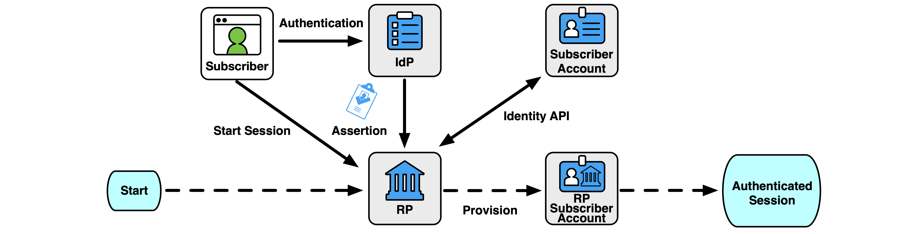
In this model, the RP also receives attributes about subscribers who have not yet interacted with the RP and who may never do so. This is in contrast to other models in which the RP only receives information about the subset of subscribers that use the RP, and then only after the subscriber uses the RP for the first time. The privacy considerations of the RP having access to this information prior to a federation transaction SHALL be accounted for in the trust agreement.
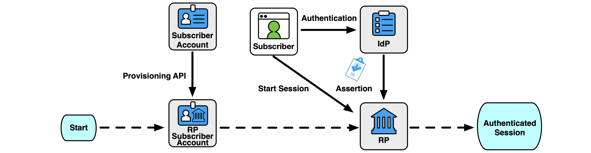
Fig. 9. Ephemeral provisioning
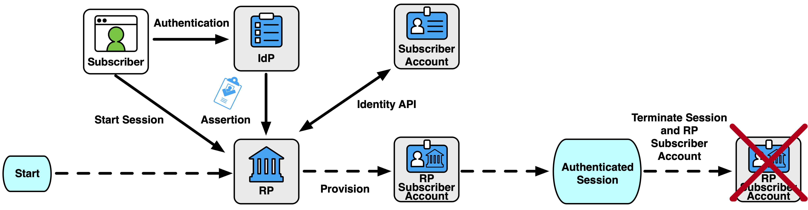
All organizations SHALL document their provisioning models as part of their trust agreement.
In a federated process, the IdP and RP each have their own stores of identity attributes that are associated with the subscriber account. The IdP has a direct view of the subscriber account’s attributes, but the RP subscriber account is derived from a subset of attributes that are presented during the federation transaction. Therefore, it is possible for the IdP and RP’s attribute stores to diverge from each other over time.
From the RP’s perspective, the IdP is the trusted source for any attributes that the IdP asserts as being associated with the subscriber account at the IdP. However, the RP MAY collect and optionally verify other attributes to associate with the RP subscriber account, as discussed in Sec. 4.6.6.
While it is possible for the IdP to proactively push updated attributes to the RP with every assertion, this practice exposes personal information on every transaction. To limit the amount of personal information sent at each transaction, the IdP SHOULD signal downstream RPs when the attributes of a subscriber account available to the RP have been updated. RPs MAY respond to this signal by requesting the new attributes from the IdP and updating the RP subscriber account. This synchronization can be accomplished by using shared signaling (see Sec. 4.8), through a provisioning API (see Sec. 4.6.5), or by signaling the RP (e.g., by providing a timestamp of when the subscriber account attributes were last updated) to request updated attributes through an identity API (see Sec. 3.12.3).
If the RP is granted access to an identity API, the IdP SHOULD allow the RP to access the identity API for sufficient time to perform synchronization operations after the federation transaction has concluded. While an identity API is most often used during the first login, especially with a just-in-time provisioning process, on subsequent logins it is possible that attributes could have changed since the RP last fetched them. Therefore, the RP ought to be given access to the identity API beyond the initial login process to allow the RP to update its cache of attributes in the RP subscriber account. For example, if the assertion is valid for five minutes, access to the identity API could be valid for 30 minutes to allow the RP to fetch and update attributes out of band if the RP has determined that the RP subscriber account is out of date.
The IdP SHOULD signal downstream RPs when a subscriber account is terminated or when the subscriber account’s access to an RP is revoked. This can be accomplished through shared signaling (see Sec. 4.8), through a provisioning API (see Sec. 4.6.5), or through an out-of-band mechanism. Upon receiving such a signal, the RP SHALL process the RP subscriber account, as stipulated in the trust agreement and in accordance with Sec. 3.11.3. If the reason for termination is suspicious or fraudulent activity, the IdP SHALL notify the RP of the termination and include the reason in its signal to the RP to allow the RP to review the associated RP subscriber account’s activity for suspicious activity, if specified in the trust agreement with that RP.
As part of pre-provisioning, the RP can be given access to subscriber attributes through a general-purpose identity API known as a provisioning API. This type of API allows an IdP to push attributes for a range of subscriber accounts and sometimes allows an RP to directly query the attributes of these subscriber accounts. Since access to the API is granted outside of the context of a federation transaction, access to the provisioning API for a given subscriber does not indicate to the RP that a given subscriber has been authenticated.
The attributes in the provisioning API that are available to a given RP SHALL be limited to only those necessary for the RP to perform its functions, including any audit and security purposes, as discussed in Sec. 3.10.1. As part of establishing the trust agreement, the IdP SHALL document when an RP is given access to a provisioning API, including at least the following:
Access to the provisioning API SHALL occur over a mutually authenticated protected channel. The exact means of authentication varies depending on the specifics of the API and whether it is a push model (i.e., the IdP initiates the connection to the RP) or a pull model (i.e., the RP initiates the connection to the IdP).
A provisioning API SHALL NOT be made available under a subscriber-driven trust agreement. The IdP SHALL NOT make a provisioning API available to any RP outside of an established trust agreement. The IdP SHALL provide access to a provisioning API only as part of a federated identity relationship with an RP to facilitate federation transactions with that RP and related functions, such as signaling revocation of the subscriber account. The IdP SHALL revoke an RP’s access to the provisioning API once access is no longer required by the RP for its functioning purposes or when the trust agreement is terminated.
Any provisioning API provided to the RP SHALL be under the control and jurisdiction of the IdP. External attribute providers MAY be used as information sources by the IdP to provide attributes through this provisioning API, but the IdP is responsible for the content and accuracy of the information provided by the referenced attribute providers.
When a provisioning API is in use, the IdP SHALL signal to the RP when the state of a subscriber account has been changed, such as when the account has been terminated or disabled. When receiving such a signal, the RP SHALL remove the binding of the federated identifier from the account. The RP MAY terminate the RP subscriber account if it can no longer be accessed by the subscriber. The RP SHALL treat all personal information sourced from the provisioning API in accordance with Sec. 3.11.3.
Provisioning APIs, such as SCIM [RFC7644], are often used in enterprise scenarios in which there is an established relationship between the IdP and RP, as shown in the example in Sec. 9.5.
The RP MAY collect and maintain additional attributes from the subscriber beyond those provided by the IdP. For example, the RP could collect a preferred display name directly from the subscriber that is not provided by the IdP. The RP could also have a separate agreement with an attribute provider that gives the RP access to an identity API that is not associated with the IdP. For example, the RP could receive a state license number from the IdP but use a separate attribute verification API to check whether a particular license number is currently valid. The assertion from the IdP binds the license to the subscriber, but the attribute verification API provides additional information beyond what the IdP can share or be authoritative for.
These attributes are governed separately from the trust agreement since they are collected by the RP outside of a federation transaction. However, all attributes in the RP subscriber account — regardless of source — SHALL be stored in accordance with Sec. 3.11.3.
The RP SHALL disclose to the subscriber the purpose for collecting any additional attributes. These attributes SHALL be used solely for the stated purposes of the RP’s functionality. The transmission of additionally collected attributes SHALL be handled in accordance with Sec. 3.10.1.
The RP SHALL provide a secure and effective means of redress for the subscriber to update and remove these additionally collected attributes from the RP subscriber account. See Sec. 3.5.3 for additional requirements and considerations for redress mechanisms.
The following requirement applies to federal agencies, regardless of whether they operate their own identity service or use an external CSP as part of their identity service:
If an RP is using a just-in-time provisioning mechanism, the RP only learns of the existence of a subscriber account when that account is first used at the RP. If the IdP does not inform the RP of terminated subscriber accounts using shared signaling (see Sec. 4.8), an RP could accumulate RP subscriber accounts that are no longer accessible from the IdP. This poses a risk to the RP for holding personal information in the RP subscriber accounts and providing potentially exploitable accounts for an attacker to target. In such circumstances, the RP MAY employ a time-based mechanism to identify RP subscriber accounts for termination that have not been accessed after a period of time that is tailored to the usage patterns of the application. For example, an RP that is usually accessed on a weekly basis could set a timeout of 120 days since last access at the RP to mark the RP subscriber account for termination. An RP that expects longer gaps between access (e.g., a service used annually) should have a much longer time frame for time-based termination, such as five years.
When processing an inactive account, the RP SHALL provide sufficient notice to the subscriber about the pending termination of the account and provide the subscriber with an option to re-activate the account prior to its scheduled termination. Upon termination, the RP SHALL remove all personal information associated with the RP subscriber account in accordance with Sec. 3.11.3.
In a federated environment, the RP manages its sessions separately from any sessions at the IdP. The assertion is related to both sessions, but its validity period is ultimately independent of them.
As shown in Fig. 10, an assertion is created during an authenticated session at the IdP, and processing an assertion creates an authenticated session at the RP. The validity time window of an assertion is used to manage the RP’s processing of the assertion but does not indicate the lifetime of the authenticated session at the IdP or RP. If a request comes to the IdP for a new federation transaction while the subscriber’s session is still valid at the IdP, a new and separate assertion would be created with its own validity time window. Similarly, after the RP consumes the assertion, the validity of the RP’s session is independent of the validity of the assertion. In most cases, the authenticated session at the RP will far outlive the validity of the assertion. Access granted to an identity API is likewise independent of the validity of the assertion or the lifetime of the authenticated session at the RP.
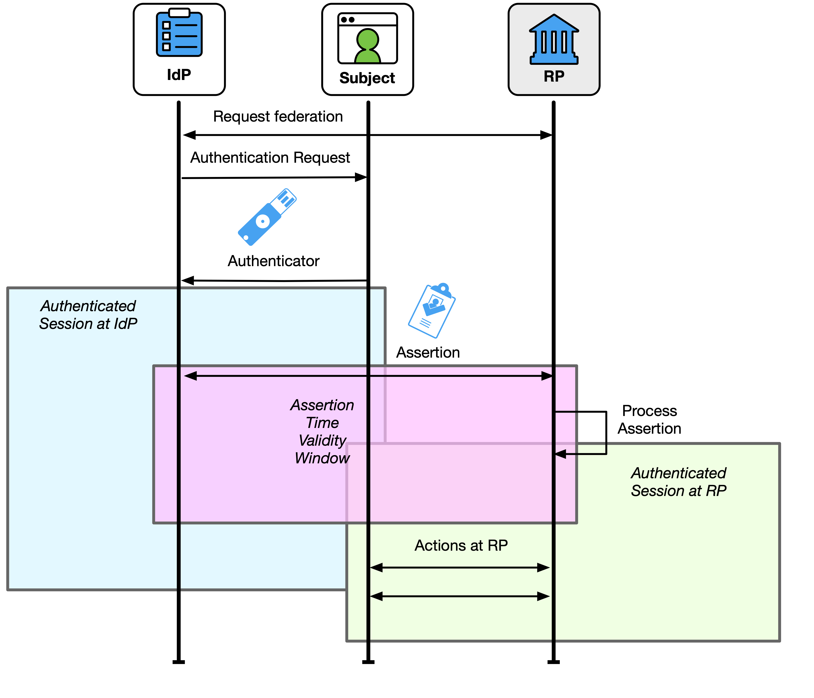
The IdP terminating the subscriber’s session at the IdP will not necessarily terminate any sessions that subscriber might have at downstream RPs. The RP and IdP MAY communicate end-session events to each other if supported by the federation protocol or through shared signaling (see Sec. 4.8).
At the time of a federated transaction request, the subscriber could have a pre-existing authenticated session at the IdP that MAY be used to generate an assertion to the RP. The IdP SHALL communicate to the RP any information that the IdP has regarding the recency of the subscriber’s latest authentication event at the IdP, and the RP MAY use this information to make authorization and access decisions. Depending on the capabilities of the federation protocol in use, the IdP SHOULD allow the RP to request that the subscriber provide a fresh authentication at the IdP, such as requesting a maximum time since the subscriber’s last authentication event. For example, suppose that the subscriber authenticates at the IdP for one transaction. The subscriber then starts a federation transaction at the RP 30 minutes later. Depending on xAL requirements, the subscriber’s existing session at the IdP can be used to avoid prompting the subscriber for their authenticators. The resulting assertion to the RP will indicate that the last time the subscriber authenticated to the RP was 30 minutes in the past. The RP can then use this information to determine whether this is reasonable for the RP’s needs. If the authentication time is not sufficient for the RP, the RP can request the IdP to prompt the subscriber for a fresh authentication event.
If an RP is granted access to an identity API at the same that time the RP receives an assertion, the lifetime of the access to the identity API is independent of the lifetime of the assertion. As a consequence, the RP’s ability to successfully fetch additional attributes through an identity API SHALL NOT be used to establish or extend a session at the RP. Likewise, the inability to access an identity API SHOULD NOT be used to end the session at the RP.
While an RP could also be granted access to other non-identity APIs during the federation transaction (e.g., a subscriber’s calendar), non-identity APIs are out of the scope of these guidelines.
The RP MAY terminate its authenticated session with the subscriber or restrict access to the RP’s functions if the assertion, authentication event, or attributes do not meet the RP’s requirements. For example, if an RP is configured to allow access to certain high-risk functionality only if the federation transaction was at FAL3, but the incoming assertion only meets the requirements for FAL2, the RP could decide to deny access to the high-risk functionality while allowing access to a lower risk functionality, or the RP could choose to terminate the session entirely.
See [SP800-63B] Sec. 5 for more information about session management requirements that apply to both IdPs and RPs.
In some environments, it is useful for the IdP and RP to send information to each other outside of the federation transaction. These signals can communicate important changes in state between parties that would not otherwise be known, such as suspected fraud or an account status change. Shared signaling SHALL be limited to the allowable functions of the identity process, as discussed in Sec. 3.10.1. All uses of shared signaling SHALL be documented in the trust agreement and made available to the authorized party stipulated by the trust agreement. This documentation SHALL include the events under which a signal is sent, the type of information included in such a signal (including any personal information), any additional parameters sent with the signal, and the expected processing of a received signal. The use of shared signaling SHALL be subject to privacy review under the trust agreement. Shared signals SHALL NOT include personal information except what is necessary to identify the subscriber account in question (e.g., an account identifier or attributes that can be correlated by the receiving party).
Signaling from the IdP to the RP SHALL require a pre-established trust agreement. Signaling from the RP to the IdP MAY be used in both pre-established and subscriber-driven trust agreements.
The IdP SHOULD send a signal to the RP regarding the following changes to the subscriber account:
If the RP receives a signal that an RP subscriber account is suspected of compromise, the RP SHOULD review actions taken by that account at the RP for suspicious activity.
The RP SHOULD send a signal to the IdP regarding the following changes to the RP subscriber account:
If the IdP receives a signal that a subscriber account is suspected of compromise, the IdP SHALL review actions taken by that account at the IdP for suspicious activity. If suspicious activity is confirmed at the IdP, the IdP SHALL signal any additional RPs that the subscriber account was used for during the suspected time frame.
Additional signals from both the IdP and RP SHALL be subject to a security review, included in the privacy risk assessment, and addressed in the trust agreement.
If the RP allows for account linking to multiple IdPs, the RP SHALL document their practices regarding signals for linked accounts. The RP SHALL ensure that the shared signals do not reveal the identity of a subscriber’s linked IdPs.
An assertion is a statement from the IdP to the RP that contains information about an authentication event for an authenticated subscriber as well as a set of attribute values, derived attribute values, or attribute bundles about or associated with that subscriber. In addition to attribute information, assertions comprise a variety of data, including assertion metadata, information about the subscriber’s authentication at the IdP, and other information that the RP can leverage (e.g., restrictions, validity time window). While the assertion’s primary function is to authenticate the user to an RP, the information conveyed in the assertion can be used by the RP for a number of use cases (e.g., identity proofing, authorization, personalization of a website). These guidelines do not restrict RP use cases nor the type of protocol or data payload used to federate an identity, provided that the chosen solution meets all mandatory requirements contained herein.
Assertions SHALL represent a discrete authentication event of the subscriber at the IdP and SHALL be processed as a discrete authentication event at the RP.
All assertions SHALL include the following attributes:
If the RP subscriber account does not use an ephemeral provisioning process, the subscriber SHALL be identified in the assertion using a federated identifier (see Sec. 3.4) or through an account resolution process (see Sec. 3.8.2).
If the subscriber is identified using a federated identifier, the assertion SHALL include:
The following aspects of the federation transaction SHALL be provided through information contained in the assertion contents or the applicable trust agreement:
The assertion SHOULD contain additional information about the authentication method used at the IdP, if available (e.g., whether the authenticator used is phishing-resistant). Some technologies that can carry information include Vectors of Trust [RFC8485] or authentication class references in [OIDC] and [SAML].
At FAL2 and above, the assertion SHALL include:
At FAL3, the assertion SHALL include one of the following:
Assertions SHALL NOT contain subscriber authentication secrets (e.g., passwords).
Assertions MAY also include additional items, including:
The RP SHALL validate the assertion by checking that all of the following are true:
An RP that uses the federated identifier to identify the subscriber SHALL NOT treat subject identifiers as inherently globally unique across IdPs. Instead, the value of the assertion’s subject identifier is processed in a namespace under the assertion issuer’s control, as discussed in Sec. 3.4. This allows an RP to talk to multiple IdPs without incorrectly conflating subjects from different IdPs.
Any release of identity attributes to the RP is subject to the terms of the trust agreement. Section 3.10 contains privacy requirements for presenting attributes in assertions. The RP MAY be given limited access to an identity API (see Sec. 3.12.3), either in the same response as the assertion is received or through some other mechanism. The RP can use this API to fetch additional identity attributes for the subscriber that are not included in the assertion itself. These attributes are also subject to the terms of the trust agreement.
The assertion’s validity time window is the time between its issuance and its expiration. This window needs to be large enough to allow the RP to process the assertion and create a local application session for the subscriber but should not be longer than necessary for such establishment, including reasonable clock drift between the IdP and RP. Long-lived assertions have a greater risk of being stolen or replayed; a short assertion validity time window mitigates this risk. Assertion validity time windows SHALL NOT be used to limit the session at the RP. See Sec. 4.7 for more information.
When the federation transaction is initiated by the RP, the RP’s request for an assertion SHALL contain:
The RP’s request SHOULD additionally contain:
When federation transactions are initiated by the IdP (at FAL1), these requirements do not apply. Federation transactions are always initiated by the RP at FAL2 or higher.
In most federation protocols, the RP and the IdP communicate with each other in two ways, each of which can be used to pass an assertion from the IdP to the RP:
There are trade-offs with each model, but both require the proper validation of the assertion. Assertions MAY also be proxied to facilitate federation between IdPs and RPs using different presentation methods, as discussed in detail in Sec. 3.3.3.
In the back-channel presentation model shown in Fig. 11, the subscriber is given an assertion reference to present to the RP, generally through the front channel. The assertion reference itself contains no information about the subscriber and SHALL be resistant to tampering and fabrication by an attacker. The RP presents the assertion reference to the IdP to fetch the assertion. Methods for achieving this vary based on the federation protocol in use. In the authorization code flow and some forms of the hybrid flow of [OIDC], the assertion (i.e., the ID Token) is presented in the back channel in exchange for the assertion reference (i.e., the authorization code). In the artifact binding profile of [SAML-Bindings], the SAML assertion is presented in the back channel.
Fig. 11. Back-channel presentation
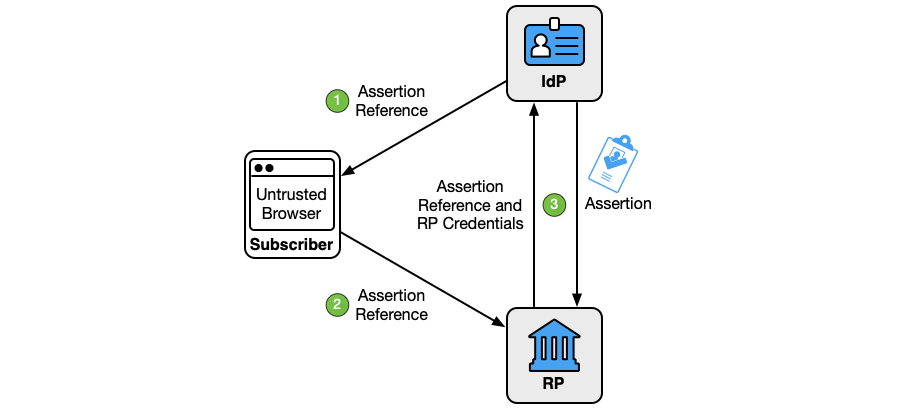
As shown in Fig. 11, the back-channel presentation model consists of three steps:
The assertion reference:
In this model, the RP directly requests the assertion from the IdP to minimize the chances of interception and manipulation by a third party, including the subscriber. More network transactions are required in the back-channel method than a front-channel method, but the information is limited to only those parties that need it. Since an RP only expects to get an assertion directly from the IdP as a result of its request, the attack surface is reduced. Consequently, it is more difficult to inject assertions directly into the RP, and this presentation method is recommended for FAL2 and above. Since the IdP and RP are already directly connected, the back-channel presentation method facilitates the use of identity APIs, as described in Sec. 3.12.3.
It is technically possible but unlikely for an assertion reference (which is single-audience by definition) to result in a multi-audience assertion. For this reason, back-channel presentation is practically limited to use with single-audience assertions.
Conveyance of the assertion reference from the IdP to the subscriber and from the subscriber to the RP SHALL be made over an authenticated protected channel. Conveyance of the assertion reference from the RP to the IdP and vice versa SHALL be made over an authenticated protected channel.
The RP SHALL protect itself against the injection of manufactured or captured assertion references by using cross-site scripting (XSS) and cross-site request forgery (CSRF) protection, rejecting assertion references outside of the correct stage of a federation transaction, or other accepted techniques discussed in Sec. 3.11.1. When assertion references are presented to the IdP, the IdP SHALL verify that the RP presenting the assertion reference is the same RP that made the assertion request that resulted in the assertion reference. Examples for this are discussed in Sec. 9.12, including authorization code flow of [OIDC] with additional security profiles, such as [FAPI] and [iGov].
In a federation proxy (see Sec. 3.3.3), the upstream IdP audience restricts the assertion reference and assertion to the proxy, and the proxy restricts any newly created assertion references or assertions to the downstream RP.
In the front-channel presentation model shown in Fig. 12, the IdP creates an assertion and sends it to the RP by means of a third party, such as the subscriber’s user agent. In the implicit flow and some forms of the hybrid flow of [OIDC], the assertion (i.e., the ID Token) is presented in the front channel. In the SAML Web SSO profile defined in [SAML-WebSSO], the SAML assertion is presented in the front channel.
Fig. 12. Front-channel presentation
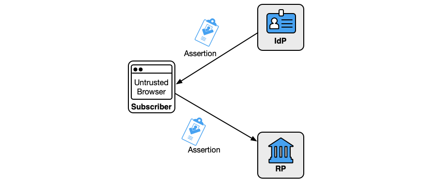
Front-channel presentation methods expose the assertion to parties other than the IdP and RP, which increases the risk of leaking the personal information included in the assertion. Additionally, there is an increased attack surface for the assertion to be captured and replayed by an attacker. As a consequence, front-channel presentation is not recommended when other mechanisms are available.
The RP SHALL use the assertion identifier to ensure that a given assertion is presented at most once during the assertion’s validity time window.
The RP SHALL protect itself against the injection of manufactured or captured assertions by using XSS and CSRF protection, rejecting assertions outside of the correct stage of a federation transaction, or other accepted techniques discussed in Sec. 3.11.1.
Conveyance of the assertion from the IdP to the subscriber and from the subscriber to the RP SHALL be made over an authenticated protected channel.
With general-purpose IdPs, it is common for front-channel communications to be accomplished using HTTP redirects, where the contents of the assertion are made available as part of an HTTP request URL. Due to the nature of the HTTP ecosystem, these request URLs are sometimes available in unexpected places, such as access logs, web proxies, and browser histories. These artifacts tend to live on long past the federation transaction and are available in other contexts, which increases the attack surface for reading the assertion. As a consequence, an IdP that uses HTTP redirects for the front-channel presentation of assertions SHALL encrypt all personal information in the assertion, as discussed in Sec. 3.13.3. Other front-channel presentation mechanisms that do not share these characteristics (e.g., HTTP form-post binding, application-specific URLs) SHOULD encrypt all personal information in the assertion.
This section is normative.
A subscriber-controlled wallet is an IdP for which the CSP makes the attributes of the subscriber account available through the issuance of attribute bundles, as described in Sec. 5.1. The subscriber activates the wallet using an activation factor or authenticator, as described in Sec. 5.4. Usually, the subscriber-controlled wallet runs on a device that is controlled by the subscriber and represents only a single subscriber. However, wallets can also be hosted on remote systems in a deployment pattern that is sometimes known as a cloud wallet.
When the CSP issues attribute bundles to the subscriber-controlled wallet, the process SHALL include the following steps:
The subscriber-controlled wallet MAY generate and use a different signing key and verification key for each issuance request with the CSP.
The CSP SHALL create a unique attribute bundle for each requesting wallet and SHOULD create a unique attribute bundle for each request from an individual wallet.
Many subscriber-controlled wallets can carry attribute bundles from multiple CSPs simultaneously. The simultaneous presentation of attribute bundles from multiple CSPs in a single assertion is possible with some technologies. When this occurs, the assertion of multiple attribute bundles SHALL conform to the assertion requirements in this guideline.
\clearpage
The CSP SHALL provide a means of invalidating attribute bundles that are issued to a subscriber-controlled wallet. This process is used when:
To accomplish this, the CSP SHOULD issue attribute bundles with a limited time validity window. The CSP SHOULD provide a means to independently verify the status of attribute bundles (i.e., whether a specific bundle has been revoked by the CSP). If such a service is offered, the service SHALL be deployed in a privacy-preserving way such that the CSP is not alerted to the use of a specific attribute bundle at a specific RP.
A federation transaction with a subscriber-controlled wallet establishes the subscriber’s device as an IdP for the subscriber account and creates an authenticated session for the subscriber at the RP. The process is shown in Fig. 13.
Fig. 13. Federation with a subscriber-controlled wallet
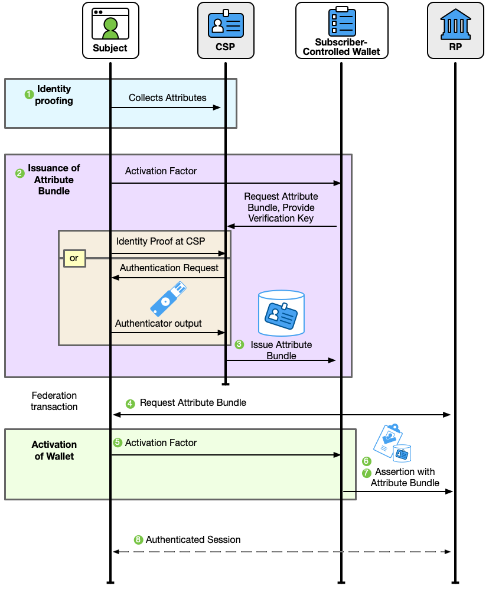
A federation transaction with a subscriber-controlled wallet takes place over several steps:
Due to the architectures and design of subscriber-controlled wallets, the trust agreements that support federated transactions are less direct than with general-purpose IdPs. To maintain privacy outcomes and prevent the tracking of user transactions, CSPs and RPs do not typically have direct communication with each other. The following requirements apply to all subscriber-controlled wallet scenarios:
The xALs required by the RP MAY also be disclosed to the subscriber at runtime.
All of the information that is disclosed to the subscriber needs to be conveyed in a manner that is understandable and actionable, as discussed in Sec. 8.
Trust between the CSP and RP in subscriber-controlled wallet scenarios will not typically be bidirectional. In the general case, the RP trusts the CSP as the source of attribute bundles that are presented by subscriber-controlled wallets during a federation transaction, while the CSP is not expected to have direct knowledge of the RP. This trust relationship between the RP and CSP MAY be facilitated by a federation authority (see Sec. 3.5.2) that defines overarching trust agreements between members of an ecosystem representing RPs, CSPs, and subscriber-controlled wallets. Such trust agreements SHALL contain:
Trust MAY also be established unilaterally by RP evaluation of publicly available information about CSPs and their processes for issuing attribute bundles. To facilitate this, CSPs SHALL publish the following information to a trusted location for RPs to evaluate:
This information MAY be made available by a trusted third party, such as a federation authority that assesses and evaluates CSP attribute bundle issuance and makes CSP features available through a discovery service.
Trust between RPs and CSPs MAY be accomplished in either a pre-established (see Sec. 4.3.1) or subscriber-driven fashion (see Sec. 4.3.2). For example, an RP could be statically configured to accept attribute bundles from only a specific set of CSPs for its purposes, or the RP could alternatively accept attribute bundles from any CSP by prompting the subscriber for consent at runtime. This trust relationship could also be made more explicit by the RP being provided a means of verifying CSP-approved subscriber-controlled wallet identifiers beyond the verification of the attribute bundle, such as a discovery service provided through a federation authority.
The trust relationship between the CSP and the subscriber-controlled wallets will always be direct in nature. As such, there SHALL be a trust agreement between the CSP and the subscriber-controlled wallets into which they issue attribute bundles. At a minimum, this trust agreement SHALL include the following:
The primary extension of trust in a subscriber-controlled wallet scenario is through the RP’s evaluation of the attribute bundles and their issuance process by the CSP. However, wallets play an important role in the degree to which RPs trust the information being presented to them in assertions that contain attribute bundles signed by the CSP.
Information about the features and capabilities of a subscriber-controlled wallet can help inform the degree to which RPs trust a given transaction. This information can demonstrate confidence that the subscriber presenting an attribute bundle is the individual represented by that attribute bundle. For example, information about how the wallet locally authenticates the subscriber, protects verification keys, and enforces trust agreement requirements indicated by the CSP or RP all support improved RP federation and access decisions. As such, subscriber-controlled wallets SHALL disclose to RPs:
This information MAY be provided at runtime or through discovery mechanisms for wallet metadata. For more on this topic, see Sec. 5.8.
Since assertions from a subscriber-controlled wallet always contain a reference to one of the wallet’s verification keys inside the signed attribute bundle from the CSP, subscriber-controlled wallets that run on a subscriber-controlled device are capable of issuing holder-of-key assertions if all of the requirements for holder-of-key assertions are met (see Sec. 3.15). These assertions MAY be used to reach FAL3 if all requirements for FAL3 are met (see Sec. 2.4).
The verification keys of a subscriber-controlled wallet on a hosted service do not meet the requirements for holder-of-key assertions on their own since the subscriber is not in control of the key material as they would be on a subscriber-controlled device. To reach FAL3, federation transactions with a subscriber-controlled wallet on a hosted service SHALL use either a holder-of-key assertion (see Sec. 3.15) or a bound authenticator (see Sec. 3.16). All requirements for FAL3 in Sec. 2.4 SHALL be met. For example, a holder-of-key assertion from a subscriber-controlled wallet on a hosted service could include the verification key of an authenticator separate from the wallet verification key. The subscriber would present this additional authenticator to the RP along with the wallet’s assertion.
The subscriber-controlled wallet SHALL require the presentation of an activation factor from the subscriber for the following actions that result in the creation of a signed artifact from the wallet’s signing keys:
The subscriber-controlled wallet SHOULD require the presentation of an activation factor before any other operations that result in the creation of a signed artifact from the wallet’s signing keys. For example, using the wallet as an authenticator at AAL2 or above requires the presentation of an activation factor as per Sec. 3.2.10 of [SP800-63B].
The wallet MAY request the reissuance of previously issued attribute bundles from the same CSP without requiring subscriber involvement.
For subscriber-controlled wallets that run on a device that the subscriber controls, the submission of the activation factor SHALL be a separate operation from the unlocking of the host device (e.g., smartphone), although the same activation factor used to unlock the host device MAY be used in the activation operation. Organizations MAY relax this requirement for subscriber-controlled wallets managed by or on behalf of the CSP (e.g., via mobile device management) and that are constrained to have short, organization-determined inactivity timeouts and device activation factors that meet the above requirements. Additional discussion of activation factors for authenticators is found in Sec. 3.2.10 of [SP800-63B].
For subscriber-controlled wallets that are hosted on a remote service, activation of the wallet is performed using an authenticator that is registered to the wallet service. This authenticator MAY be separate from those bound to the subscriber account at the CSP.
Keys used for signing assertions SHALL NOT be synced or shared across devices, and wallet implementations SHOULD use non-exportable key storage, as discussed in Sec. 3.6.2.
If the wallet’s signing key is used as a holder-of-key authenticator for FAL3, the key SHALL be stored in non-exportable key storage, as discussed in Sec. 3.6.2.
To perform a federation transaction with a subscriber-controlled wallet, the RP SHALL first determine the attribute bundle verification key of the CSP through a secure process as stated by the trust agreement. In some systems, this is accomplished by retrieving the CSP’s attribute bundle verification keys from a URL that is known to be controlled by the CSP. In other systems, the RP is configured manually with the verification keys of the CSP before being deployed. In systems governed by multi-lateral trust agreements, this process can be facilitated by a third-party discovery and registration service, such as one provided by a federation authority.
The signed attribute bundle includes the CSP that issued the bundle and one or more verification keys that are associated with the subscriber-controlled wallet. Since the RP trusts the CSP’s process of issuing attribute bundles to subscriber-controlled wallets, the RP can trust the presentation of those bundles that are made using proof of one of the subscriber-controlled wallet’s signing keys.
In many cases, the process of the RP registering with the subscriber-controlled wallet is expected to be a dynamic process in which the RP exchanges its keys and metadata with the IdP during the federation transaction. The nature of a subscriber-controlled wallet makes it difficult for any specific RP to pre-register with an instance of the wallet, but this can be facilitated through the use of a trusted third party that is stipulated in the trust agreement.
Parties that seek to federate MAY use a trusted third party to facilitate the discovery and registration processes if that trusted third party is identified in the trust agreement. For example, consider an ecosystem has a centralized service for managing discovery and registration. When an RP joins the ecosystem, it registers itself with the trusted service, downloads the CSP’s verification keys, and receives an identifier to use with wallets. When the CSP issues attribute bundles to the subscriber-controlled wallet, the subscriber-controlled wallet is informed where it can find the list of valid RP identifiers within the ecosystem. When the RP connects to the wallet, the wallet can verify the RP’s identifier without the RP having to register itself directly with the wallet. Likewise, the RP can trust the wallet’s verification keys by verifying the CSP’s signature over the wallet’s verification keys or identifier.
The decision of whether a federation transaction proceeds and, therefore, an assertion is issued and attributes are released to the RP SHALL be determined by the subscriber acting in the role of the authorized party. The decision MAY be augmented by the use of allowlists and blocklists to allow the wallet to help the subscriber make a decision based on configured policies and trust agreements. The subscriber-controlled wallet MAY remember the subscriber’s decision to allow for future actions at the same RP without separate authorization from the subscriber. The use of a stored authorization decision does not supersede the requirement for wallet activation, as discussed in Sec. 5.4.
The subscriber-controlled wallet MAY provide a mechanism to remember a disclosure decision by the authorized party (i.e., the subscriber) to apply to future requests from the same RP. If such a mechanism is provided, the subscriber-controlled wallet SHALL disclose to the authorized party that the storage mechanism is in use and SHALL allow the authorized party to revoke such remembered access at a future time.
The subscriber-controlled wallet SHOULD provide a means to selectively disclose a subset of the attributes in the attribute bundle from the CSP.
The CSP SHALL provide secure and effective means of redress of subscriber complaints or problems (e.g., subscriber identifies an inaccurate attribute value, the need to invalidate attribute bundles that were previously issued to a subscriber-controlled wallet). See Sec. 3.5.3 for additional requirements and considerations for redress mechanisms.
When federation transactions are initiated by the RP, the RP’s request for an assertion SHALL contain:
When federation transactions are initiated by the IdP (at FAL1), these requirements do not apply. Federation transactions are always initiated by the RP at FAL2 or higher.
Assertions from a subscriber-controlled wallet SHALL contain:
Assertions MAY contain:
The following aspects of the federation transaction SHALL be provided through information contained in the assertion contents or the applicable trust agreement:
If a subscriber-controlled wallet is hosted as a remote service, the AAL of the subscriber’s current session at the hosted wallet service SHALL be provided through information contained in the assertion contents or the applicable trust agreement. In this case, the assertion SHOULD contain additional information about the authentication method used at the IdP, if available (e.g., whether the authenticator used is phishing-resistant). Some technologies that can carry this information include Vectors of Trust [RFC8485] or authentication class references in [OIDC] and [SAML].
At FAL2 and above, the assertion SHALL include:
At FAL3, the assertion SHALL include one of the following:
Assertions SHALL NOT contain subscriber authentication secrets (e.g., passwords).
The signed attribute bundle from the CSP SHALL contain:
If the RP subscriber account does not use an ephemeral provisioning process (see Sec. 4.6.5) or an account resolution process (see Sec. 3.8.2), the subscriber SHALL be identified in the assertion using a federated identifier (see Sec. 3.4). The issuer identifier SHALL be of the CSP that issued the signed attribute bundle, and the subject identifier SHALL be contained in the signed attribute bundle and processed in the namespace of the CSP that issued the attribute bundle.
The signed attribute bundle from the CSP SHOULD contain a validity time window, which is defined as a period of time outside of which the attribute bundle SHALL NOT be accepted as valid by the RP for the purposes of authenticating the subscriber and starting an authenticated session at the RP. This is usually communicated by means of an expiration timestamp for the attribute bundle in addition to the issuance timestamp.
The signed attribute bundle from the CSP MAY contain additional information about the subscriber account, such as the set of controls used to determine the IAL.
Additional identity attributes and derived attribute values MAY be included in the attribute bundle. These attributes SHALL be made available to the RP using a selective disclosure method if such a method is made available by the underlying attribute bundle. In selective disclosure, a subset of attributes is revealed rather than the entire set. This may be driven by a minimum set required to complete a transaction as defined by the RP or through selection by the subscriber at runtime.
Identity attributes that are in the assertion but outside of a signed attribute bundle SHALL be considered self-asserted. The RP MAY validate these additional attributes using its own validation process.
Assertions SHALL be presented to the RP through an authenticated protected channel.
The presentation SHALL include the cryptographic nonce from the RP’s request, if present (this is required at FAL2 and above). The RP SHALL verify the nonce in accordance with the federation protocol.
If the presentation mechanism passes the assertion through a component other than the wallet or RP, personal information in the assertion SHOULD be encrypted by the wallet using the RP’s encryption key, as discussed in Sec. 3.13.3.
To enhance privacy, the presentation mechanism SHOULD provide features to enable unlinkability of the subscriber and their information at different RPs.
The RP SHALL protect itself against the injection of manufactured or captured assertions by using XSS and CSRF protection, rejecting assertions outside of the correct stage of a federation transaction, or other accepted techniques discussed in Sec. 3.11.1. When possible, subscriber-controlled wallets that run on a subscriber-controlled device SHOULD use platform APIs instead of HTTP redirects when delivering an assertion to the RP.
The RP SHALL validate the signature on all signed attribute bundles in the assertion using the verification key from the CSP that issued the signed attribute bundle. The RP SHALL validate the signature of the assertion using the verification key of the subscriber-controlled wallet contained in the signed attribute bundle.
The RP SHALL validate the assertion by checking that all the following are true:
Additionally, if a mechanism for invalidating attribute bundles is provided by the CSP, the RP SHOULD use this mechanism to determine whether the attribute bundle has been invalidated by the CSP since its issuance, as discussed in Sec. 5.1.1. This validation mechanism is particularly suited for attribute bundles with long or indeterminate lifetimes, since proactive invalidation by the CSP could occur long before expiration of the attribute bundle.
Due to expected architectures and trust agreements for subscriber-controlled wallets, it is likely that RP subscriber accounts will be managed with a just-in-time or ephemeral provisioning model (see Sec. 4.6.3). In each of these cases, the RP creates the RP subscriber account and associates it with the federated identifier (if available) after the successful validation of the assertion from the wallet. A pre-provisioning model could also be used, such as when the RP has an established account linking process (see Sec. 3.8.1) that would allow linking of a wallet-based identity to an existing account using a known unique attribute or set of attributes.
For many RPs that use wallet-based attribute bundles, the RP will use an account resolution process to link the information in the attribute bundle to a set of functionality at the RP, as discussed in Sec. 3.8.2. If the RP subscriber account is not ephemeral and a federated identifier is present, the RP SHOULD associate the federated identifier presented by the subscriber-controlled wallet with the RP subscriber account and use the federated identifier for future federated transactions with the same subscriber. If a federated identifier is not present (e.g., in the case of mDL), the RP will need to request the necessary attributes to resolve the subscriber to the RP subscriber account for each federated transaction. This attribute set SHALL be the minumum necessary to achieve accurate resolution. Linking to multiple federated identifiers SHALL be managed as discussed in Sec. 3.8.1.
The RP SHALL disclose its practices for managing subscriber information as part of the trust agreement. The RP SHALL provide effective means of redress to the subscriber for correcting information in the RP subscriber account. See Sec. 3.5.3 for additional requirements and considerations for redress mechanisms.
This section is informative.
Since the federated authentication process involves coordination between multiple components, including the CSP, IdP, and RP, there are additional opportunities for attackers to compromise federated identity transactions and additional ramifications for successful attacks. This section summarizes many of the attacks and mitigations that are applicable to federation.
As in non-federated authentication, attackers’ motivations are typically to gain access (or a greater level of access) to a resource or service provided by an RP. Attackers may also attempt to impersonate a subscriber. Rogue or compromised IdPs, RPs, user agents (e.g., browsers), and parties outside of a typical federation transaction are potential attackers. To accomplish their attack, they might intercept or modify assertions and assertion references. Furthermore, two or more entities may attempt to subvert federation protocols by directly compromising the integrity or confidentiality of the assertion data. For these types of threats, any authorized parties who attempt to exceed their privileges are considered attackers.
In federated systems, successful attacks on the IdP can propagate through to the RPs that rely on that IdP for identity and security information. Consequently, an attack against the IdP that targets one agency’s RP could potentially move laterally to another agency’s RP. To mitigate these attacks, RPs need to maintain independent monitoring and threat evaluation capabilities to identify malicious or compromised accounts. Additionally, maintaining information or shared signaling capabilities with appropriate privacy controls can facilitate investigation and remediation at the IdP or CSP and other potentially impacted RPs.
Deviations in identity proofing practices between CSPs and between subscriber accounts within a single CSP are inevitable. CSPs and IdPs need to maintain capabilities to convey information regarding the controls applied to each account to support RP decision-making and investigation when appropriate.
| Federation Threats/Attacks | Description | Examples |
|---|---|---|
| Assertion Manufacture or Modification | The attacker generates a false assertion | Compromised IdP asserts the identity of a claimant who has not properly authenticated |
| The attacker modifies an existing assertion | Compromised proxy that changes the AAL of an authentication assertion | |
| Assertion Disclosure | The assertion is visible to a third party | Network monitoring reveals a subscriber address of record to an outside party |
| Assertion Repudiation by the IdP | The IdP later claims not to have signed the transaction | User engages in a fraudulent credit card transaction at the RP, and the IdP claims not to have logged them in |
| Assertion Repudiation by the Subscriber | The subscriber claims not to have performed the transaction | The user agreement (e.g., contract) cannot be enforced |
| Assertion Redirect | The assertion can be used in unintended context | A compromised user agent passes the assertion to an attacker who uses it elsewhere |
| Assertion Reuse | The assertion can be used more than once with same RP | An intercepted assertion is used by an attacker to authenticate their own session |
| Assertion Substitution | The attacker uses an assertion that is intended for a different subscriber | There is a session hijack attack between the IdP and RP |
| Revoked or Stale Attributes | The attacker exploits an RP’s usage of attributes | An attribute bundle with a revoked email address is presented to an RP to allow an attacker to use that email address with the RP |
\clearpage
In addition to the security controls discussed in Sec. 3.11, mechanisms that assist in mitigating the above threats are identified in Table 4.
Table 4. Mitigating federation threats
| Federation Threat/Attack | Threat Mitigation Mechanisms | Normative Reference(s) |
|---|---|---|
| Assertion Manufacture or Modification | Cryptographically sign the assertion at the IdP and verify at the RP | 3.5, 3.12.2 |
| Send the assertion over an authenticated protected channel that authenticates the IdP | 4.11 | |
| Include a non-guessable random identifier in the assertion | 3.12.1 | |
| Assertion Disclosure | Send the assertion over an authenticated protected channel that authenticates the RP | 4.9, 5.8 |
| Encrypt the assertion for a specific RP (may be accomplished using a mutually authenticated protected channel) | 3.12.3 | |
| Assertion Repudiation by the IdP | Cryptographically sign the assertion at the IdP with a signing key that supports non-repudiation, and verify the signature at the RP | 3.12.2 |
| Assertion Repudiation by the Subscriber | Issue holder-of-key assertions or assertions with bound authenticators; proof of possession of the authenticator verifies the subscriber’s participation to the RP | 3.14 3.15 |
| Assertion Redirect | Include the identity of the RP for which the assertion is issued in its signed content; the RP verifies that they are the intended recipient | 3.12.4 |
| Assertion Reuse | Include an issuance timestamp with a short validity period in the signed content of the assertion; the RP verifies the time period | 4.9, 5.8 |
| The RP keeps track of assertions that are consumed within a configurable time window to ensure that a given assertion is not used more than once | 3.12.1 | |
| Assertion Substitution | Ensure that assertions contain a reference to the assertion request or some other nonce that was cryptographically bound to the request by the RP | 4.9, 5.8 |
| Send assertions in the same authenticated protected channel as the request (e.g., back-channel presentation) | 4.11.1 | |
| Revoked or Stale Attributes | Ensure fresh assertions with valid time windows | 4.9, 5.8 |
| Enable checking validity of attribute bundles independently of assertions | 5.1.1 |
This section is informative.
Federation offers numerous benefits to RPs and subscribers, but it requires subscribers to have trust in the federation participants. Section 3 and Sec. 3.4.1 cover a number of technical requirements whose objective is to minimize privacy risks that arise from increased capabilities to track and profile subscribers. For example, a subscriber using the same IdP to authenticate to multiple RPs allows the IdP to build a profile of subscriber transactions that would not have existed absent federation. The availability of such data makes it vulnerable to uses that may not be anticipated or desired by the subscriber and may inhibit subscriber adoption of federated services.
Section 3.10 requires IdPs to use measures to maintain the objectives of predictability (i.e., enabling reliable assumptions by individuals, owners, and operators about personal information and its processing by an information system) and manageability (i.e., enabling the granular administration of personal information, including alteration, deletion, and selective disclosure) commensurate with privacy risks that can arise from the processing of attributes for purposes other than those listed in Sec. 3.10.1.
IdPs may have various business purposes for processing attributes, including providing non-identity services to subscribers. However, processing attributes for different purposes from the original collection purpose can create privacy risks when individuals do not expect or are not comfortable with the additional processing. IdPs can determine appropriate measures commensurate with the privacy risks that arise from the additional processing. For example, absent applicable laws, regulations, or policies, it may not be necessary to obtain consent when processing attributes to provide non-identity services requested by subscribers, although notices may help subscribers maintain reliable assumptions about the processing (i.e., predictability). Other processing of attributes may carry different privacy risks that call for obtaining consent or allowing subscribers more control over the use or disclosure of specific attributes (i.e., manageability). Subscriber consent needs to be meaningful. Therefore, when IdPs do use consent measures, they cannot make acceptance by the subscriber of additional uses a condition of providing the identity service.
Consult the SAOP if there are questions about whether the proposed processing falls outside of the scope of the permitted processing or the appropriate privacy risk mitigation measures.
When holder-of-key assertions are used at FAL3, the same authenticator is usually used at both the IdP and RP. With authenticators that can fulfill this technical requirement, it is likely that the same authenticator would further be used at multiple RPs. Furthermore, an unrelated RP could use the same authenticator for direct authentication. All such RPs would potentially be able to collude and disclose the use of the same authenticator across all parties in order to track the subscriber through the network. This is true even if per-provider identifiers are used, as the authenticator could be recognizable apart from the assertion. Additionally, many authenticators that are suitable for holder-of-key assertions contain identity attributes that are sent as part of the authenticator output separately from the assertion or an identity API. These additional attributes have to be covered by the privacy risk assessment, even if they are not in the federation protocol.
Section 3.10 also encourages the use of technical measures to provide disassociability (i.e., enabling the processing of personal information or events without association to individuals or devices beyond the operational requirements of the system) and prevent subscriber activity tracking and profiling [NISTIR8062]. Technical measures, such as those outlined in Sec. 3.3.3 for proxied federation and Sec. 3.4.1 for pairwise pseudonymous identifiers, can increase the effectiveness of policies by making it more difficult to track or profile subscribers beyond operational requirements. However, even these measures have their limitations, and tracking can still occur based on subscriber attributes, statistical demographics, and other kinds of information shared between the IdP and RP.
Since attribute bundles are traceable to the issuing CSP, using this technology makes it possible to track subscribers across different wallets and RPs based on where their attributes are issued from. By grouping attribute bundle issuers into a single issuing authority, the risks of divulging the attribute source are lessened at the cost of obscuring the ultimate source of the attributes to the RP. Techniques such as zero-knowledge proofs and one-time-use attribute bundles can further enhance the privacy of attribute bundles.
In some use cases, such as enterprise systems or services susceptible to fraud, tracking the real-world identity of the subscriber is expected as a means of securing the system, especially at higher IALs. It is the responsibility of the IdP and RP to inform and educate the subscriber about which pieces of information are transmitted and to allow the subscriber to review this information.
To build subscriber trust in federation, subscribers need to be able to develop reliable assumptions about how their information is being processed. For instance, it can be helpful for subscribers to understand what information will be transmitted and which attributes for the transaction are required versus optional, and for subscribers to have the ability to decide whether to transmit optional attributes to the RP. Accordingly, Sec. 3.5 requires that positive confirmation be obtained from the authorized party before any attributes about the subscriber are transmitted to any RP.
In determining when a set of RPs should share a shared pairwise pseudonymous identifier (see Sec. 3.4.1.3), the trust agreement considers the subscriber’s understanding of such a grouping of RPs and provides a means for effective notice to the subscriber in assisting such understanding. An effective notice will consider user experience design standards and research, as well as an assessment of privacy risks that may arise from the information processing. There are various factors to be considered, including the reliability of the assumptions that subscribers may have about the processing and the roles of different entities involved in federation. However, a link to a complex, legalistic privacy policy or general terms and conditions that a substantial number of subscribers do not read or understand is never an effective notice.
Section 3.5 does not specify which party should provide the notice. In some cases, a party in a federation may not have a direct connection to the subscriber in order to provide notice and obtain consent. Although multiple parties may elect to provide notice, parties can use contracts or trust framework policies to determine in advance which party will provide the notice and obtain confirmation if that determination is based upon factors that center on enabling the subscriber to read the notice and make an informed choice.
The IdP is required to inform subscribers of all RPs that might access the subscriber’s attributes. If an RP is on an IdP’s allowlist (see Sec. 4.6.1.1), the subscriber will not be prompted at runtime to consent to the release of their attributes. This single sign-on scenario allows for a more seamless login experience for the subscriber, who might not even realize they are participating in a federation transaction. The IdP makes its list of allowlisted RPs available to the subscriber as part of the terms of the trust agreement. This information allows the subscriber to see which RPs might have access to their attributes, under what circumstances, and for what purposes.
If a subscriber’s runtime decisions at the IdP were stored in the subscriber account by the IdP to facilitate future transactions, the IdP also needs to allow the subscriber to view and revoke any RPs that were previously approved during a runtime decision. This list includes information on which attributes were approved and when the approval was recorded. Similarly, if a subscriber’s runtime decisions at the RP are stored in some fashion, the RP also needs to allow the subscriber to view and revoke any IdPs that were approved during a runtime decision.
Federation enables the data exposed to an RP to be minimized, which can yield privacy protections for subscribers. RPs need to request only the minimal information that they need in order to function instead of all information that is available in the subscriber account. Although an IdP may collect additional attributes beyond what the RP requires for its use case, IdPs are to only transmit those attributes that were explicitly requested by the RP.
In some instances, an RP’s function does not require the full value of an attribute. For example, an RP may need to know whether the subscriber is over 13 years old but not the full date of birth. To minimize the collection of potentially sensitive personal information, the RP may request a derived attribute value (e.g., Question: Is the subscriber over 13 years old? Response: Y/N or Pass/Fail). This minimizes the RP’s collection of potentially sensitive and unnecessary personal information. Accordingly, Sec. 3.11.2 recommends the RP to request derived attribute values rather than full attribute values, where feasible. To support this RP requirement, IdPs ought to support a derived attribute value, where feasible.
To minimize the personal information collected and protect privacy, IdPs ought to give users with pseudonymous options for providing data to RPs, where possible. Likewise, RPs ought to request pseudonymous options for users when pseudonymity is possible for the RP’s policy. Both IdPs and RPs need to seek to minimize unnecessary data transmission.
Section 3.10 identifies agency requirements to consult their SAOP to determine privacy compliance requirements. It is critical to involve the agency’s SAOP in the earliest stages of digital authentication system development to assess and mitigate privacy risks and advise the agency on compliance obligations, such as whether the federation triggers the Privacy Act of 1974 [PrivacyAct] or the E-Government Act of 2002 [E-Gov] requirement to conduct a PIA. For example, if the agency is serving as an IdP in a federation, Privacy Act requirements will likely be triggered and require coverage by either a new or existing Privacy Act SORN since credentials would be maintained at the IdP on behalf of any RP with which it federates. However, if the agency is an RP that uses a third-party IdP, digital authentication may not trigger the requirements of the Privacy Act, depending on what data passed from the RP is maintained by the agency at the RP. In such instances, the agency may have a broader programmatic SORN that covers such data.
The SAOP can similarly assist the agency in determining whether a PIA is required. These considerations should not be read as a requirement to develop a Privacy Act SORN or PIA for the use of a federated transaction alone. In many cases, it will make the most sense to draft a PIA and SORN that encompass the entire digital authentication process or include the digital authentication process as part of a larger programmatic PIA that discusses the program or benefit the agency is establishing online access.
Due to the many components of digital authentication, it is important for the SAOP to be aware of and understand each individual component. For example, other privacy artifacts may be applicable to an agency that offers or uses federated IdP or RP services (e.g., Data Use Agreements, Computer Matching Agreements). The SAOP can assist the agency in determining what additional requirements apply. Moreover, a thorough understanding of the individual components of digital authentication will enable the SAOP to properly assess and mitigate privacy risks, either through compliance processes or by other means.
While some proxy structures — typically those that exist primarily to simplify integration — may not offer additional subscriber privacy protection, others offer varying levels of privacy to the subscriber through a range of blinding technologies. Privacy policies may dictate the appropriate use of subscriber attributes and authentication transaction data (e.g., identities of the ultimate IdP and RP) by the IdP, RP, and the federation proxy.
Blinding can also increase the effectiveness of these policies by making the data more difficult to obtain. A proxy-based system has three parties, and the proxy can be used to hide information from one or more of the parties, including itself. In a double-blind proxy, the IdP and RP do not know each other’s identities, and their relationship is only with the proxy. In a triple-blind proxy, the proxy does not have insight into the data being passed through it. As the level of blinding increases, the technical and operational implementation complexity may also increase. Since proxies need to map transactions to the appropriate parties on either side and manage the cryptographic keys for all parties in the transaction, fully triple-blind proxies are very difficult to implement in practice.
Even with the use of blinding technologies, a blinded party may still infer protected subscriber information through released attribute data or metadata (e.g., by analyzing timestamps, attribute bundle sizes, or attribute signer information). The IdP could consider additional privacy-enhancing approaches to reduce the risk of revealing identifying information about the entities participating in the federation.
Table 5 shows a spectrum of blinding implementations used in proxied federation. This table is intended to be illustrative and is neither comprehensive nor technology-specific.
Table 5. Proxy characteristics
| Proxy Type | RP knows IdP | IdP knows RP | Proxy can track between RP & IdP | Proxy can see attributes of Subscriber |
|---|---|---|---|---|
| Non-Blinding Proxy With Attributes | Yes | Yes | Yes | Yes |
| Non-Blinding Proxy | Yes | Yes | Yes | N/A |
| Double Blind Proxy With Attributes | No | No | Yes | Yes |
| Double Blind Proxy | No | No | Yes | N/A |
| Triple Blind Proxy With or Without Attributes | No | No | No | No |
This section is informative.
To align with the standard terminology of user-centered design, customer experience, and usability, the term “user” is used throughout this section to refer to the human party. In most cases, the user in question will be the subject in the role of applicant, claimant, or subscriber, as described elsewhere in these guidelines. Customer experience sits at the nexus of usability, accessibility, and optionality. Considering user needs allows organizations to provide responsive and secure identity solutions while minimizing unnecessary friction and frustration.
Ergonomics of Human-System Interaction — Part 11: Usability: Definitions and Concepts [ISO/IEC9241-11] defines usability as the “extent to which a system, product or service can be used by specified users to achieve specified goals with effectiveness, efficiency and satisfaction in a specified context of use.” This definition focuses on users, goals, and the context of use as the key elements necessary for achieving effectiveness, efficiency, and satisfaction. A holistic approach that considers these key elements is necessary to achieve usability.
From a usability perspective, one of the major potential benefits of federated identity systems is to address the problem of user fatigue that is associated with managing multiple authenticators. While this has historically been a problem with usernames and passwords, the increasing need for users to manage many authenticators — whether physical or digital — presents a usability challenge.
As stated in Sec. 8.1 of [SP800-63A] and Sec. 8.1 of [SP800-63B], overall user experience is critical to the success of digital identity systems. This is especially true for federated identity systems, as federation is a less familiar user interaction paradigm for many users. Users’ prior authentication experiences may influence their expectations.
The overall user experience with federated identity systems should be as smooth and easy as possible for legitimate users. This can be accomplished by following usability standards (e.g., the ISO 25060 series of standards) and established best practices for user interaction design.
Guidelines and considerations are described from the users’ perspective.
Section 508 of the Rehabilitation Act of 1973 [Section508] was enacted to eliminate barriers in information technology and require federal agencies to make electronic and information technology accessible to people with disabilities. While these guidelines do not directly assert requirements from Section 508, identity service providers are expected to comply with Section 508 provisions. Beyond compliance with Section 508, federal agencies and their service providers are generally expected to design services and systems with the experiences of people with disabilities in mind to ensure that accessibility is prioritized throughout identity system life cycles.
Federated identity systems should:
Minimize the use of unfamiliar technical jargon and details (e.g., users do not need to know the terms IdP and RP if the basic concepts are clearly explained, and users do not need to know the specific FAL value if its effects are clearly communicated).
Strive for a consistent and integrated user experience across the IdP and RP, particularly when in a single security domain.
Help users understand identity by providing resources, such as graphics, illustrations, frequently asked questions (FAQs), tutorials and examples. Resources should explain how users’ information is treated and how transacting parties (e.g., RPs, IdPs, proxies) relate to each other.
Provide clear, honest, and meaningful communications to users (i.e., communications should be explicit and easy to understand).
Provide users with online services that are independent of location and device.
Make trust relationships explicit to users to facilitate informed trust decisions. Trust relationships are often dynamic and context-dependent. Users may be more likely to trust some IdPs and RPs with certain attributes or transactions more than others. For example, users may be more hesitant to use federated identity systems on websites that contain valuable personal information (e.g., financial or health). Depending on the perceived sensitivity of users’ personal information, some users may be less comfortable with commercial IdPs since people often have concerns about advertising and the data usage of such companies. Conversely, some may have more confidence in commercial IdPs than in government IdPs based on a general mistrust of government services or because they are more familiar with commercial offerings. Either way, it is critical to be clear to end users about the entities involved in a federation transaction and, ideally, provide options that support the broadest set of stakeholder perceptions possible.
Follow the usability considerations specified in [SP800-63A] Sec. 8 for any user-facing information.
Clearly communicate how and where to acquire technical assistance. For example, provide users with a link to an online self-service feature, chat sessions, or a phone number for help desk support. Avoid redirecting users back and forth between transacting parties (e.g., RPs, IdPs, and proxies) to receive technical assistance.
This section addresses the specific usability considerations that have been identified with federated identity systems. This section does not attempt to present exhaustive coverage of all usability factors related to federated identity systems. Rather, it is focused on the larger, more pervasive themes in the usability literature, primarily users’ perspectives on identity, user adoption, trust, and perceptions of federated identity space. In some cases, implementation examples are provided. However, specific solutions are not prescribed. The implementations mentioned are examples to encourage innovative technological approaches addressing specific usability needs. See standards for system design and coding, specifications, APIs, and current best practices for additional examples. Implementations are sensitive to many factors that prevent a one-size-fits-all solution.
Even when users are familiar with federated identity systems, there are different approaches to federated identity that make it necessary to establish reliable expectations for how user data is treated, especially in terms of privacy and the sharing of information. Users and implementers have different concepts of identity. Users think of identity as logging in and gaining access to their own private space. Implementers think of identity in terms of authenticators, assertions, assurance levels, and the necessary set of identity attributes to provide a service. Given this disconnect, it is essential to help users form an accurate concept of identity as it applies to federated identity systems. A good model of identity gives users a foundation for understanding the benefits and risks of federated systems and encourages user adoption and trust of these systems.
To minimize the personal information collected and protect privacy, IdPs and RPs ought to inform users of the benefits and drawbacks of pseudonymous identification, what information is transmitted, and for what purpose.
Many properties of identity have implications for how users manage identities, both within and among federations. Just as users manage multiple identities based on context outside of cyberspace, users must learn to manage their identity in a federated environment. Therefore, it must be clear to users how identity and context are used. The following factors should be considered:
Provide users with the requisite context and scope in order to distinguish among different user roles. For example, differentiate whether the user is acting on their own behalf or on behalf of another, such as their employer.
Provide users with unique, meaningful, and descriptive identifiers to distinguish among entities, such as IdPs, RPs, and accounts. Any such user-facing identifiers are likely to be in addition to identifiers used by the underlying protocols, which are not normally exposed to the user.
Provide users with information on data ownership and those authorized to make changes. Identities and the data associated with them can sometimes be updated and changed by multiple actors. For example, some healthcare data is updated and owned by the patient, while some data is only updated by a hospital or doctor’s practice.
Provide users with the ability to easily verify, view, and update attributes. Identities and user roles change over time (e.g., address, health, and financial data). The ability to update attributes or make attribute release decisions may not be offered at the same time. Ensure that the process for users to change attributes is well-known, documented, and easy to perform. See Sec. 5.3 of [SP800-63A] for more information about allowing users to update core attributes.
Provide users with a means to update data, even if the associated subscriber account or RP subscriber account is disabled or terminated. Consider applicable audit, legal, or policy constraints when tracking updated data.
Provide users with a means to completely delete their identities completely and remove all information about themselves, including their transaction history. In certain cases, deactivating the RP subscriber account is more appropriate than deleting it, as the RP may be required to retain portions of the data in the RP subscriber account. Consider applicable audit, legal, or policy constraints that may preclude such actions.
Provide users with clear, easy-to-find information on the site or application data retention policy.
Provide users with appropriate anonymity and pseudonymity options and the ability to switch among such identity options as desired, in accordance with the organization’s data access policies.
Provide a means for users to manage each IdP to RP connection, including complete separation and the removal of RP access to one or more attributes.
Many factors can influence user adoption of federated identity systems. As with any technology, users may value some factors more than others. Users often weigh perceived benefits versus risks before making technology adoption decisions. It is critical that IdPs and RPs provide users with sufficient information to enable them to make informed decisions. The concepts of trust and tiers of trust are fundamental principles in federated identity systems that can drive user adoption. Finally, a positive user experience may also result in increased user demand for federation, triggering the increased adoption by RPs.
To encourage user adoption, IdPs and RPs need to establish and build trust with users and help them understand the benefits and risks of adoption. The following factors should be considered:
Allow users to control their information disclosure and provide explicit consent through the appropriate use of interactive user interfaces and notifications (see Sec. 7.2). Considerations such as balancing the content, size, and frequency of notifications and tailoring notifications to specific communities are necessary to avoid users clicking through without fully understanding the implications of their consent.
Collect information for constrained usage only, and minimize information disclosure (see Sec. 7.3). User trust is eroded by unnecessary and superfluous information collection and disclosure or tracking without explicit consent. For example, only request attributes from the user that are relevant to the current transaction, not for all possible transactions that a user may access at the RP.
User concern over risk can negatively influence their willingness to adopt federated identity systems. Users may have concerns about trust, privacy, security, and single points of failure perceived in federated systems. For example, users may be fearful of losing access to multiple RPs if a single IdP is unavailable, either temporarily or permanently. Additionally, users may be concerned or confused about learning a new authentication process. In order to foster the adoption of federated identity systems, the perceived benefits must outweigh the perceived risks.
Users’ beliefs and perceptions predispose them to expect certain results and behave in certain ways. Such beliefs, perceptions, and predispositions are referred to in social sciences as “mental models.” For example, people have a mental model of dining out that guides their behavior and expectations at each establishment, such as fast food restaurants, cafeterias, and more formal restaurants. Thus, it is not necessary to be familiar with every establishment to understand how to interact appropriately at each one.
Assisting users in establishing good and complete mental models of federation allows users to generalize beyond a single specific implementation. If federated identity systems are not designed from users’ perspectives, users may form incorrect or incomplete mental models that impact their willingness to adopt these systems. The following factors should be considered:
Provide users with clear and usable ways (e.g., visual assurance) to determine the authenticity of the transacting parties (e.g., RPs, IdPs, proxies). This will also help alleviate user concern over leaving one domain for another, especially if the root domain changes (e.g., .gov to .com). For example, display the URL of the IdP so that the user can verify that they are not being phished by a malicious site.
Provide users with clear information regarding logins and logouts, including visual cues. Depending on the implementation, logging into an RP with a federated account can create long-running sessions for the user at both the IdP and RP. Users may not realize that ending their session with the RP will not necessarily end their session with the IdP; users will need to explicitly “log out” of the IdP. Users require clear information to remind them if explicit logouts are required to end their IdP sessions. Both the IdP and RP could also have automated logout features, which proactively log the user out based on how long it has been since the user authenticated or how long it has been since the user was active in a session. Users require clear information about when their session might end without any action on their part in order to avoid frustration, lost work, or insecure workarounds (e.g., copying data out of a secure site in order to avoid an unexpected session timeout).
Provide users with clear and understandable explanations of trust agreement terms and consequences that are free of technical jargon.
A primary aspect of customer experience is anticipating the needs of the user population and offering federation in a manner that is suitable for that population. In assessing customer experience risks and challenges, IdPs and RPs should consider the overall user population that is served by their federated identity service and deploy solutions that support their needs and capabilities.
Federation is a highly technical process. There is very little process exposed to the end user that directly impacts their customer experience and is not already addressed by authentication and identity proofing customer experience considerations. There are two notable exceptions: 1) the process for selecting and remembering the IdP and 2) handling errors and communication between the IdP and the RP help desks. In addition to what is discussed here, the IdP needs to consider the customer experience related to identity proofing, attribute validation, and enrollment (see Sec. 8.2 of [SP800-63A]) and considerations concerning authenticators (see Sec. 8.2 of [SP800-63B]).
Users can struggle with choosing between multiple IdPs, especially if there is a large volume of them. While there is not a single means for presenting the user with IdP options, RPs that leverage multiple IdPs are encouraged to perform user testing with their presentation design to understand user reactions and evaluate the best means for conveying options. Additionally, by providing information about the practices and capabilities of IdPs, the RP can better support users as they select an IdP that is most likely to meet their means and capabilities.
Another challenge for users is remembering the IdP with which they established a subscriber account. This is particularly true when interactions between the RP and its IdPs are infrequent. In order to support effective and successful ongoing interactions with their users, RPs are encouraged to develop mechanisms for directing users to a previously used IdP. This could take the form of a look-up mechanisms by a subscriber’s input (such as their email address) or remembering which IdP was used in a previous session. Implementing this can address various issues, such as:
RPs and IdPs need to clearly communicate how and where to acquire technical assistance. For example, provide users with a link to an online self-service feature, chat sessions, or a phone number for help desk support. Avoid redirecting users back and forth among transacting parties (e.g., RPs, IdPs, proxies) to receive technical assistance.
Further, coordination between participating entities is critical for successful customer experiences. The IdP and RP support teams need to know how to appropriately redirect users to address their concerns in the event they are sent to the incorrect party. For example, if a user were to call an IdP help desk trying to understand why an RP website function is failing, the IdP support staff needs to be able to direct the user to information or an RP-side support capability to help resolve their concerns. This distributed responsibility in a federated model creates interaction points for users that are highly likely to result in frustration and confusion if not addressed in design, usability, operational, and continuous improvement plans.
This guideline establishes normative requirements for IdPs and RPs to mitigate commonly experienced customer friction. However, normative requirements are unlikely to anticipate all potential customer experience problems, which will vary for different applications. Accordingly, IdPs and RPs need to provide mechanisms for subscribers to report issues or challenges and to advise them on potential alternative authentication and access strategies.
This section is informative.
This section provides several example scenarios of federation used in conjunction with the requirements in these guidelines. These scenarios are for illustrative purposes and do not convey additional requirements beyond those imposed by these guidelines.
OpenID Connect [OIDC], SAML [SAML], and various digital wallet technologies provide a variety of capabilities that can be leveraged to reach the requirements at different FALs. Table 6 provides examples of specific options in these protocols that could be deployed to reach a given FAL. It is important to note that this table does not represent a normative mapping to the given FALs, and the entirety of the federation process has to be considered when establishing an FAL. Additionally, each FAL could be reached by processes, deployments, and procedures that are not listed in this table.
Table 6. FAL protocol examples
| OIDC | SAML | Wallet | |
|---|---|---|---|
| FAL1 | All core flows in [OIDC] (i.e., Authorization Code, Implicit, and Hybrid) can be configured to require the assertion (i.e., the ID Token) to be signed using JSON Web Signatures. Assertions are presented in a variety of front- and back-channel methods. Each of these flows can be built using both manual and dynamic client registration. Profiles such as [OIDC-Basic] and [OIDC-Implicit] can provide additional guidance for interoperable deployments. | The [SAML-WebSSO] profile allows for the signing of assertions using XML D-Sig and the presentation of the assertion using the front channel. SAML deployments are generally set up with a manual registration that can meet the requirements at FAL1 and above. Registration is sometimes managed through a federation authority. | The subscriber’s CSP issues an attribute bundle to the subscriber’s chosen wallet software using [OIDC4VCI]. The RP requests an attribute from the subscriber’s wallet using [OIDC4VP], and the RP validates that the assertion and the attribute bundle are properly formed and signed. The RP accepts the assertions based on subscriber-driven interactions and does not have a pre-configured list of CSPs from which it will accept attribute bundles. |
| FAL2 | Flows that present the ID Token in the back channel (e.g., Authorization Code, Hybrid) can provide a level of assertion injection protection. | The Artifact Binding of SAML defined in [SAML-Bindings] allows for a back-channel presentation of SAML assertions that can provide a level of assertion injection protection. | The RP can be configured to trust a specific set of CSPs from which it will accept attribute bundles for its purposes without knowing ahead of time the wallets that will be used. By using on-device assertion presentation methods, the wallet can provide assertion injection protection. |
| FAL3 | The ID Token can include the necessary claims for holder-of-key and bound authenticator assertion presentations, though there are no industry standard profiles that do so at the time of publication. | The SAML Holder-of-Key profile can fit the assertion requirements at this level, if combined with other deployment choices. | The RP accepts a trust agreement with a CSP that has a strict process for onboarding any wallets and is managed by a federation authority. In addition to presenting the attribute bundles, the wallet sends proof of possession of an authentication key in its proof, allowing the RP to reach FAL3 using a holder-of-key process. It is also possible to combine an assertion from a subscriber-controlled wallet with a bound authenticator. |
For actual deployments, there are additional considerations outside of those that affect the FAL. For OpenID Connect in particular, it is common practice to give access to an identity API (i.e., the UserInfo Endpoint) and additional APIs. While the security of API access is outside of the scope of these guidelines, an OpenID Connect implementation ought to strive to increase the security of all API calls in tandem with the FAL. For example, in addition to requiring a holder-of-key assertion at FAL3, which requires the verification of a subscriber-held signing key, an OpenID Connect system might also require sender-constrained access tokens for API access, which require the verification of a signing key held by the RP for each API call.
Agency A, which issues and manages subscriber accounts, sets up and operates an OpenID Connect IdP to make these subscriber accounts available online through a federation process.
The RP enters into a pairwise trust agreement with the IdP to accept assertions for subscribers from Agency A. The RP declares the set of attributes that it needs from the IdP as part of this agreement. The trust agreement stipulates that the subscriber is the authorized party for determining the release of attributes in the federation transaction.
The IdP generates a federated identifier for the subscriber account by taking the employee number and passing it through a one-way cryptographic function to create a unique identifier for the subscriber account. Such an identifier does not allow an RP to calculate the internal identifier but will be stable across changes to other attributes, such as name and email address.
Per the terms of the trust agreement, the subscriber is prompted by the IdP the first time they log on to the RP. The IdP asks for the subscriber’s consent at runtime to share their attributes with the RP and displays the RP’s requested uses for these attributes on the subscriber’s consent screen. The IdP also prompts the subscriber to allow the IdP to remember this consent decision. This stored decision causes the IdP to act on the stored consent in a future request and not prompt the subscriber if the same RP requests the same attributes.
The assertion is formatted as an OpenID Connect ID Token and contains the minimum set of attributes to facilitate the federated log in. Apart from the federated identifier, the assertion contains no identifying information about the subscriber. In addition to the assertion, the RP is given an OAuth 2.0 access token that allows the RP to access the OpenID Connect UserInfo Endpoint hosted by the IdP. The RP can choose to call this API to obtain additional attributes as needed, such as the first time the subscriber uses the RP. Since this RP follows a just-in-time provisioning model, when the RP sees the subscriber’s federated identifier for the first time, the RP creates an RP subscriber account for that federated identifier and calls the identity API to populate the RP subscriber account with the subscriber’s attributes. For future authentications with this subscriber, the IdP includes a timestamp of when the subscriber’s attributes were last updated. The RP calls the identity API when the updated time is more recent than the last time the RP has called the API. Additionally, the RP proactively refreshes through the identity API twice a year based on their business needs and account management expectations.
Agencies A, B, and C each have an IdP that provides OpenID Connect for their subscriber accounts. All three agencies join a multilateral federation run by an independent agency that is set up to provide interagency connections. The federation authority independently verifies that each IdP represents the agency in question. The federation authority publishes the discovery records of the IdPs for all agencies that are part of the multilateral federation using a discovery specification, such as [OIDFed]. Such specifications allow RPs within the federation to discover the characteristics of IdP that may be used to access accounts for a given agency under the rules of the federation agreement.
RPs X and Y wish to allow logins from agencies A, B, and C, and the RPs declare their intent to join the federation and send a list of required attributes to the federation authority. The federation authority assesses the RP requests and adds them to the multilateral federation’s trust agreement. This allows both RPs to register at each of the three separate IdPs as needed for each agency.
Both RPs interface directly with each of the three IdPs and not through a federation proxy. When a new IdP or RP is added to the multilateral federation agreement, the existing IdPs and RPs are notified of the new component and its parameters.
The IdPs and RPs establish a shared signaling channel under the auspices of the federation authority. This allows any IdP or RP to report suspicious or malicious behavior that involves a specific account to the rest of the members under the federation authority.
Agency B makes its subscriber accounts available for federation through the use of digital wallet technology. The agency’s agreement for issuing attribute bundles (known in this technology space as “credentials”) into wallets is facilitated by a federation authority that is set up to manage digital wallets across the Federal Government. The federation authority establishes the identity of the CSP for each agency under the multilateral agreement and ensures that only the CSP for Agency B can onboard subscriber-controlled wallets for Agency B within the multilateral trust agreement.
A subscriber has a digital wallet running on their device that they want to use with their subscriber account from Agency B. The subscriber directs their digital wallet software to Agency B’s CSP. The subscriber uses a biometric factor to activate their digital wallet, and the digital wallet makes an onboarding request to the CSP for the subscriber account. This onboarding request includes proof of a signing key held by the digital wallet. The CSP verifies the wallet’s proof and processes any additional attestations from the wallet device.
The subscriber authenticates to the CSP during the onboarding process. The CSP prompts the subscriber with the terms of the trust agreement from the federation authority and asks the subscriber to confirm that they wish to issue an identity to the digital wallet in question. The subscriber is informed of the sets of attributes that are made available to the wallet.
The CSP creates an attribute bundle that includes the subscriber’s attributes and a reference to the digital wallet’s verification key. The CSP signs this attribute bundle with its own signing key and returns the bundle to the digital wallet.
When the subscriber needs to access an RP, whether for authentication or identity proofing, the RP sends a query to the subscriber’s wallet for an attribute bundle that fits the RP’s needs. The RP has a trust agreement with the same federation authority and agrees to trust identities that are issued under the multilateral trust agreement’s rules. The digital wallet, acting as an IdP, identifies that the RP’s request can be fulfilled by the attribute bundle issued from Agency B’s CSP. The digital wallet prompts the subscriber to activate the IdP function of the digital wallet software using a local biometric factor. The digital wallet prompts the subscriber to confirm that they want to present the requested attributes to the RP in question. When the subscriber accepts, the IdP function of the digital wallet creates an assertion for the RP that is signed with the digital wallet’s signing keys. The assertion includes the signed attribute bundle from the CSP. The IdP delivers the assertion to the RP.
The RP receives the signed assertion and validates the signature of the attribute bundle from the CSP using the CSP’s verification keys that were identified by the federation authority. The RP then validates the signature of the assertion using the verification key that is identified in the assertion. When these checks pass successfully, the RP creates an RP subscriber account to represent the subscriber at the RP based on the information in the assertion.
Organizations commonly make enterprise applications available to all potential subscribers within the agency through the use of an allowlist and pre-provisioned accounts.
In this scenario, Agency E establishes a pairwise agreement with an RP to provide an enterprise-class service to all employees of Agency E through the agency’s OpenID Connect IdP. As part of this trust agreement, the IdP allows access to a SCIM-based provisioning API for the RP. The IdP creates a federated identifier for each subscriber account and uses the provisioning API to push the federated identifiers and their associated attributes to the RP. In this way, the RP can pre-provision an RP subscriber account for every subscriber in the IdP’s system. This allows the RP to offer functionality (e.g., access rights, data sharing, messaging) to all accounts on the system, whether or not a specific account has logged in to the RP yet.
Under the terms of the trust agreement, the RP is placed on an allowlist with the IdP. The allowlist entry states that the federation transaction can continue automatically if all the following are true:
When the RP begins the federation transaction, the RP’s request indicates that the subscriber needs to have an active session authenticated at AAL2. The RP requests only the “openid” scope, which indicates that only the federated identifier is returned from the IdP in the assertion. The RP begins a back-channel request with parameters in line with reaching FAL2. Consequently, subscribers are not prompted for consent at runtime because the agency consented to use the service on behalf of all accounts when the RP was onboarded. This gives subscribers a seamless single sign-on experience, even though a federation protocol is being used across security domain boundaries. Since the IdP does not use any runtime decisions, any deviation from the allowlist parameters causes the federation transaction to fail.
The RP subscriber accounts are synchronized using the provisioning API. When a new subscriber account is created, modified, or deleted at the IdP, the IdP updates the status of the RP subscriber account using the provisioning API. This allows the RP to maintain an up-to-date status for each subscriber account. For example, when the subscriber account is terminated at the IdP, the provisioning API signals to the RP that the corresponding RP subscriber account is to be terminated immediately. The RP removes all locally cached attributes for the account in question, except for the identifiers and references in audit and access logs.
A subscriber has a cryptographic authenticator on a smart card. The certificate on this smart card can be verified independently by both the IdP and RP by using a shared PKI system that is stipulated by the trust agreement. This type of authenticator can be used in a holder-of-key assertion at FAL3.
The subscriber starts the federation process at the RP, which requests a federation transaction at FAL3. The subscriber authenticates to the IdP using their smart card. The IdP creates an assertion with a flag to indicate that the assertion is intended for use at FAL3. The assertion also contains the certificate common name (CN) and thumbprint of the certificate to be used as in the holder-of-key assertion.
When the RP receives the assertion, the RP processes the assertion as usual and sees the FAL3 flag and certificate attributes. The subscriber authenticates to the RP using the certificate, and the RP verifies that the certificate presented by the subscriber matches the certificate in the assertion from the IdP. When these match, the RP creates a secure session with the subscriber at FAL3.
A subscriber has a hardware cryptographic authenticator that speaks the WebAuthn protocol. This authenticator is not tied to any PKI system, and the authenticator device presents completely different and unlinked verification keys to both the IdP and RP during its normal authentication process. This kind of authenticator can still be used at FAL3 as a bound authenticator.
In this example, when the subscriber uses this authentication device at the IdP, it presents proof of Key1. When the subscriber uses the same device at the RP, it presents proof of Key2. These are logically two separate authenticators, but from the perspective of the subscriber, they are using the same device in multiple places.
To start a federation transaction, the subscriber authenticates to the IdP using Key1. The IdP then creates an assertion that is flagged as FAL3. Since the IdP has no visibility into the existence and use of Key2, the assertion says that the subscriber is using a bound authenticator to reach FAL3. When the RP processes this assertion, the RP checks the RP subscriber account associated with the federated identifier in the assertion to find a bound authenticator for that account using Key2. The RP prompts the subscriber to authenticate using Key2. When that key is verified, the RP creates a secure session with the subscriber at FAL3.
A subscriber authenticates to their IdP using a certificate that is trusted by the IdP but not known to the RP, since the IdP and RP are not in a shared PKI environment. However, the IdP and RP support the referred token binding extension of TLS. When the subscriber presents their certificate to the IdP, the IdP creates an assertion with the CN and thumbprint of the subscriber’s certificate. Along with the assertion or assertion reference, the IdP returns token binding headers. When these headers are presented to the RP, the RP can use them to associate the contents of the assertion with the subscriber’s certificate. The RP still has to verify the certificate, but the token binding allows the RP to do so without having to separately trust the certificate chain of the authenticator’s certificate. This process fulfills the requirements for a holder-of-key FAL3 transaction.
An RP needs to access a specific attribute for a subscriber (e.g., proof of age, agency affiliation) without needing to know the identity of the subscriber. The RP requests only the derived attribute values that it needs in order to process its transaction. In this case, it requests a simple boolean of whether the subscriber is of age or affiliated with an agency. The federation process creates an authenticated session between the RP and the subscriber. However, the RP uses an ephemeral provisioning mechanism and retains only a record of the transaction, not any additional identifying attributes of the subscriber. The IdP provides a pairwise pseudonymous identifier to the RP. Since the IdP knows of the ephemeral nature of the RP subscriber account, the IdP can provide a distinct PPI to the RP on each request without affecting the subscriber’s use of the RP. The IdP prompts the subscriber at runtime to release the derived attributes, preventing the RP from silently polling subscriber accounts against changes in information over time.
As a subscriber uses services at multiple RPs, there will be different trust agreements with different requirements and experiences. In this scenario, the subscriber has an account through a single IdP that they use at three different RPs, each with a different kind of trust agreement and different requirements for consent and notification.
All of these scenarios involve the same subscriber account.
A group of three applications is deployed in support of a specific mission to enable collaboration, document storage, and calendar capabilities. Due to the nature of the separate applications, they are deployed as separate RPs but are bound to the same IdP using a common trust agreement. The trust agreement stipulates that the three RPs are to be issued a shared PPI so that the applications can coordinate individual subscriber accounts with each other but not with any other applications in the deployed environment. The IdP uses an algorithm to generate a shared PPI that incorporates a randomized identifier for the set of applications and a unique identifier for each subscriber account. As a result, all three RPs get the same PPI for each subscriber, but no other RP is issued that same identifier.
A federation transaction typically takes place over multiple network calls. Throughout this process, it is important for the IdP and RP to know that they are talking to the same party that they were in the previous step and, ultimately, to the party that they expect to be in the transaction with in the first place.
Different techniques provide different degrees of assurance, depending on the federation protocol in use and the needs of the system. For example, the Authorization Code Flow of [OIDC] allows the RP to register a shared secret or private key with the IdP prior to the transaction, allowing the IdP to strongly authenticate the RP’s request in the back channel to retrieve the assertion. In addition, the Proof Key for Code Exchange protocol in [RFC7636] allows the RP to dynamically create an unguessable secret that is transmitted in hashed form in the front channel and then transmitted in full in the back channel along with the assertion reference. These techniques can be combined for even greater assurance.
Federation authorities can also facilitate the authentication process. If the RP registers its public key and identifier with the federation authority, the IdP only needs to retrieve the appropriate verification keys from the federation authority instead of requiring the RP to register itself ahead of time.
Technical profiles of specific federation protocols are out of the scope of these guidelines, but high-security profiles such as [FAPI] provide extensive guidelines for implementers to deploy secure federation protocols.
An agency’s CSP allows its subscribers to issue attribute bundles to a cloud-hosted wallet service. In this scenario, the CSP onboards the cloud wallet service on behalf of the subscriber through a dedicated onboarding process. The subscriber authenticates to the cloud wallet and initiates the onboarding process of the cloud wallet at the CSP. The subscriber authenticates to the CSP and authorizes the issuance of attribute bundles to the cloud wallet. The CSP generates and delivers these attribute bundles to the cloud wallet, the cloud wallet stores the attribute bundles on behalf of the subscriber.
Later, when the subscriber needs to authenticate to an RP, the subscriber directs the RP to use their cloud wallet. The RP initiates the federation transaction with the cloud wallet. The cloud wallet prompts the subscriber to authenticate and consent to release the attribute bundles to the RP. The cloud wallet generates an assertion and delivers it to the RP. The RP verifies the assertion and the attribute bundles from the CSP.
This section is informative.
[ACCOUNT-CHOOSER] Dingle P, Bray T (2015) OpenID AccountChooser Basic API Profile 1.0. (OpenID Foundation, San Ramon, CA). Available at https://openid.net/wordpress-content/uploads/2011/12/account-chooser-basic1.html
[E-Gov] E-Government Act of 2002, P.L. 107-347, 116 Stat. 2899, 44 U.S.C. § 101 (2002). Available at https://www.gpo.gov/fdsys/pkg/PLAW-107publ347/pdf/PLAW-107publ347.pdf
[FAPI] Fett D, Bradley J, Heenan J (2024), FAPI 2.0 Security Profile (draft). (OpenID Foundation, San Ramon, CA). Available at https://openid.bitbucket.io/fapi/fapi-2_0-security-profile.html
[FEDRAMP] General Services Administration (2022), How to Become FedRAMP Authorized. Available at https://www.fedramp.gov/
[FIPS140] National Institute of Standards and Technology (2019) Security Requirements for Cryptographic Modules. (U.S. Department of Commerce, Washington, DC), Federal Information Processing Standards Publication (FIPS) FIPS Pub 140-3. https://doi.org/10.6028/NIST.FIPS.140-3
[iGov] Varley M, Grassi P (2023) International Government Assurance Profile (iGov) for OpenID Connect 1.0 - draft 04. (OpenID Foundation, San Ramon, CA). Available at https://openid.net/specs/openid-igov-openid-connect-1_0.html
[ISO/IEC9241-11] International Standards Organization (2018) ISO/IEC 9241-11 Ergonomics of human-system interaction – Part 11: Usability: Definitions and concepts (ISO, Geneva, Switzerland). Available at https://www.iso.org/standard/63500.html
[ISO/IEC18013-5] International Standards Organization (2021) ISO/IEC 18013-5 Personal identification — ISO-compliant driving licence — Part 5: Mobile driving licence (mDL) application (ISO, Geneva, Switzerland). Available at https://www.iso.org/obp/ui/en/#iso:std:iso-iec:18013:-5:ed-1:v1:en
[NISTIR8062] Brooks S, Garcia M, Lefkovitz N, Lightman S, Nadeau E (2017) An Introduction to Privacy Engineering and Risk Management in Federal Systems. (National Institute of Standards and Technology, Gaithersburg, MD), NIST Interagency or Internal Report (IR) NIST IR 8062, January 2017. https://doi.org/10.6028/NIST.IR.8062
[NISTIR8112] Grassi PA, Lefkovitz NB, Nadeau EM, Galluzzo RJ, Dinh AT (2018) Attribute Metadata: A proposed Schema for Evaluating Federated Attributes. (National Institute of Standards and Technology, Gaithersburg, MD), NIST Interagency or Internal Report (IR) NIST IR 8112. https://pages.nist.gov/NISTIR-8112/NISTIR-8112.html
[NIST-Privacy] National Institute of Standards and Technology (2020) NIST Privacy Framework: A Tool for Improving Privacy Through Enterprise Risk Management, Version 1.0. (National Institute of Standards and Technology, Gaithersburg, MD), NIST Cybersecurity White Paper (CSWP) NIST CSWP 10. https://doi.org/10.6028/NIST.CSWP.10
[OIDC] Sakimura N, Bradley J, Jones M, de Medeiros B, Mortimore C (2014) OpenID Connect Core 1.0 incorporating errata set 1 (OpenID Foundation, San Ramon, CA). Available at https://openid.net/specs/openid-connect-core-1_0.html
[OIDC-Basic] Sakimura N, Bradley J, Jones M, de Medeiros B, Mortimore C (2022) OpenID Connect Basic Client Implementer’s Guide 1.0 (OpenID Foundation, San Ramon, CA). Available at https://openid.net/specs/openid-connect-basic-1_0.html
[OIDC-Implicit] Sakimura N, Bradley J, Jones M, de Medeiros B, Mortimore C (2022) OpenID Connect Implicit Client Implementer’s Guide 1.0 (OpenID Foundation, San Ramon, CA). Available at https://openid.net/specs/openid-connect-implicit-1_0.html
[OIDC-Registration] Sakimura N, Bradley J, Jones M (2023) OpenID Connect Dynamic Client Registration 1.0 incorporating errata set 2 (OpenID Foundation, San Ramon, CA). Available at https://openid.net/specs/openid-connect-registration-1_0.html
[OIDC4VCI] Lodderstedt T, Yasuda K, Looker T (2024) OpenID for Verifiable Credential Issuance First Implementer’s Draft (OpenID Foundation, San Ramon, CA). Available at https://openid.net/specs/openid-4-verifiable-credential-issuance-1_0-ID1.html
[OIDC4VP] Terbu O, Lodderstedt T, Yasuda K, Looker T (2023) OpenID for Verifiable Presentations Second Implementer’s Draft (OpenID Foundation, San Ramon, CA). Available at https://openid.net/specs/openid-4-verifiable-presentations-1_0-ID2.html
[OIDFed] Hedberg R, Jones M, Solberg A, Bradley J, De Marco G, Dzhuvinov V (2024) OpenID Federation 1.0 - draft 41 (OpenID Foundation, San Ramon, CA). Available at https://openid.net/specs/openid-federation-1_0.html
[PrivacyAct] Privacy Act of 1974, Pub. L. 93-579, 5 U.S.C. § 552a, 88 Stat. 1896 (1974). Available at https://www.govinfo.gov/content/pkg/USCODE-2020-title5/pdf/USCODE-2020-title5-partI-chap5-subchapII-sec552a.pdf
[RFC5280] Cooper D, Santesson S, Farrell S, Boeyen S, Housley R, Polk W (2008) Internet X.509 Public Key Infrastructure Certification and Certificate Revocation List (CRL) Profile. (Internet Engineering Task Force (IETF)), IETF Request for Comments (RFC) 5280. https://doi.org/10.17487/RFC5280
[RFC7591] Richer J, Jones M, Bradley J, Machulak M, Hunt P (2015) OAuth 2.0 Dynamic Client Registration Protocol. (Internet Engineering Task Force, Reston, VA), RFC 7591. https://doi.org/10.17487/RFC7591
[RFC7636] Sakimura N, Bradley J, Agarwal N (2015) Proof Key For Code Exchange by OAuth Public Clients. (Internet Engineering Task Force, Reston, VA), RFC 7636. https://doi.org/10.17487/RFC7636
[RFC7644] Hunt P, Grizzle K, Morteza A, Wahlstroem E, Mortimore C (2015) System for Cross-domain Identity Management: Protocol. (Internet Engineering Task Force, Reston, VA), RFC 7644. https://doi.org/10.17487/RFC7644
[RFC8446] Rescorla E (2018) The Transport Layer Security (TLS) Protocol Version 1.3. (Internet Engineering Task Force (IETF)), IETF Request for Comments (RFC) RFC 8446. https://doi.org/10.17487/RFC8446
[RFC8485] Richer J (2018) Vectors of Trust. (Internet Engineering Task Force (IETF)), IETF Request for Comments (RFC) RFC 8485. https://doi.org/10.17487/RFC8485
[RFC9325] Sheffer Y, Saint-Andre P, Fossati T (2022) Recommendations for Secure Use of Transport Layer Security (TLS) and Datagram Transport Layer Security (DTLS). (Internet Engineering Task Force (IETF)), IETF Request for Comments (RFC) RFC 9325. https://doi.org/10.17487/RFC9325
[SAML] Ragouzis N, Hughes J, Philpott R, Maler E, Madsen P, Scavo T (2008) Security Assertion Markup Language (SAML) V2.0 Technical Overview. (Organization for Advancement of Structured Information Standards (OASIS) Open, Woburn, MA), SAML 2.0. Available at https://docs.oasis-open.org/security/saml/Post2.0/sstc-saml-tech-overview-2.0.html
[SAML-Bindings] Cantor S, Frederick H, Kemp J, Philpott R, Maler M (2005) Bindings for the OASIS Security Assertion Markup Language (SAML) V2.0. (Organization for Advancement of Structured Information Standards (OASIS) Open, Woburn, MA), SAML 2.0. Available at https://docs.oasis-open.org/security/saml/v2.0/saml-bindings-2.0-os.pdf
[SAML-WebSSO] Hughes J, Cantor S, Hodges J, Hirsch F, Mishra P, Philpott R, Maler E (2005) Profiles for the OASIS Security Assertion Markup Language (SAML) V2.0. (Organization for Advancement of Structured Information Standards (OASIS) Open, Woburn, MA), SAML Profiles 2.0. Available at https://docs.oasis-open.org/security/saml/v2.0/saml-profiles-2.0-os.pdf
[Section508] General Services Administration (2022) IT Accessibility Laws and Policies. Available at https://www.section508.gov/manage/laws-and-policies/
[SD-JWT] Fett D, Yasuda K, Campbell B (2025) Selective Disclosure for JWTs (SD-JWT). (Internet Engineering Task Force, Reston, VA). Internet Draft. Available at https://datatracker.ietf.org/doc/draft-ietf-oauth-selective-disclosure-jwt/
[SP800-52] McKay K, Cooper D (2019) Guidelines for the Selection, Configuration, and Use of Transport Layer Security (TLS) Implementations. (National Institute of Standards and Technology), NIST Special Publication (SP) NIST SP 800-52r2. https://doi.org/10.6028/NIST.SP.800-52r2
[SP800-53] Joint Task Force (2020) Security and Privacy Controls for Information Systems and Organizations. (National Institute of Standards and Technology, Gaithersburg, MD), NIST Special Publication (SP) NIST SP 800-53r5, Includes updates as of December 10, 2020. https://doi.org/10.6028/NIST.SP.800-53r5
[SP800-57Part1] Barker EB (2020) Recommendation for Key Management: Part 1 – General. (National Institute of Standards and Technology, Gaithersburg, MD), NIST Special Publication (SP) NIST SP 800-57pt1r5. https://doi.org/10.6028/NIST.SP.800-57pt1r5
[SP800-63] Temoshok D, Galluzzo R, LaSalle C, Lefkovitz N, Regenscheid A, Choong YY, Proud-Madruga D, Gupta S (2025) Digital Identity Guidelines. (National Institute of Standards and Technology, Gaithersburg, MD), NIST Special Publication (SP) NIST SP 800-63-4. https://doi.org/10.6028/NIST.SP.800-63-4
[SP800-63A] Temoshok D, Abruzzi C, Choong YY, Fenton JL, Galluzzo R, LaSalle C, Lefkovitz N, Regenscheid A, Vachino M (2025) Digital Identity Guidelines: Identity Proofing and Enrollment. (National Institute of Standards and Technology, Gaithersburg, MD), NIST Special Publication (SP) NIST SP 800-63A-4. https://doi.org/10.6028/NIST.SP.800-63A-4
[SP800-63B] Temoshok D, Fenton JL, Choong YY, Lefkovitz N, Regenscheid A, Galluzzo R, Richer JP (2025) Digital Identity Guidelines: Authentication and Authenticator Management. (National Institute of Standards and Technology, Gaithersburg, MD), NIST Special Publication (SP) NIST SP 800-63B-4. https://doi.org/10.6028/NIST.SP.800-63B-4
[SP800-131A] Barker E, Roginsky A (2019) Transitioning the Use of Cryptographic Algorithms and Key Lengths. (National Institute of Standards and Technology, Gaithersburg, MD), NIST Special Publication (SP) NIST SP 800-131Ar2. https://doi.org/10.6028/NIST.SP.800-131Ar2
[VC] Sporny M, Longley D, Chadwick D. (2022) Verifiable Credentials Data Model v1.1. (World Wide Web Consortium (W3C)), W3C Recommendation. Available at https://www.w3.org/TR/vc-data-model/
This section is informative.
A wide variety of terms are used in the realm of digital identity. While many definitions are consistent with earlier versions of SP 800-63, some have changed in this revision. Many of these terms lack a single, consistent definition, warranting careful attention to how the terms are defined here.
\clearpage
\clearpage
\clearpage
One-way — It is computationally infeasible to find any input that maps to any pre-specified output.
Collision-resistant — It is computationally infeasible to find any two distinct inputs that map to the same output.
Compute the corresponding public key,
Compute a digital signature that may be verified by the corresponding public key,
Decrypt keys that were encrypted by the corresponding public key, or
Compute a shared secret during a key-agreement transaction.
Verify a digital signature that was generated using the corresponding private key,
Encrypt keys that can be decrypted using the corresponding private key, or
Compute a shared secret during a key-agreement transaction.
This appendix is informative.
This appendix provides an overview of the changes made to SP 800-63C since its initial release.
Establishes trust agreements and registration/discovery (key establishment) as discrete steps in the federation process.
All FALs have requirements around the establishment of trust agreements and registration.
FAL definitions no longer have encryption requirements. Rather, encryption is triggered by passing personal information in an assertion through an untrusted party, regardless of FAL.
FAL2 requires assertion injection protection.
FAL3 allows more general bound authenticators in addition to classical holder-of-key assertions, including RP-managed authenticators.
Requires communication of IAL/AAL/FAL.
Adds a definition for and discussion of RP subscriber accounts.
Adds RP subscriber account provisioning models and discussion.
Adds a subscriber-controlled wallet model with specific requirements separated from general-purpose IdPs.
Restructures core document sections to address common, general-purpose, and subscriber-controlled wallet requirements in separate sections.
Adds redress requirements for IdPs and RPs.
Adds enterprise and dynamic use cases throughout with explicit examples.